Bab 1
Instalasi Sistem Operasi Ubuntu
Tujuan
Setelah menyelesaikan bab ini pembaca diharapkan dapat:
- Memahami langkah-langkah dasar dalam instalasi sistem operasi Ubuntu.
- Menyiapkan lingkungan yang sesuai untuk instalasi Ubuntu pada perangkat keras.
- Melakukan instalasi sistem operasi Ubuntu pada PC/Laptop.
Ubuntu adalah salah satu distribusi Linux yang populer, digunakan secara luas karena kemudahan penggunaannya dan dukungan komunitas yang besar. Pada bab ini anda akan mempelajari bagaimana mengunduh, menyiapkan, dan instalasi Ubuntu pada PC/Laptop.
Persiapan Instalasi
Sebelum melakukan instalasi, ada beberapa hal yang perlu disiapkan :
-
Spesifikasi Minimum:
- Prosesor : Dual-core 2 GHz
- RAM : 4 GB (direkomendasikan 8 GB)
- Penyimpanan : 25 GB ruang kosong
- USB flash drive (minimal 8 GB)
- Koneksi internet (opsional)
-
Mengunduh ISO Ubuntu:
- Buka situs resmi Ubuntu di http://ubuntu.com.
- Pilih Ubuntu desktop, misalnya Ubuntu Desktop 22.04 LTS.
- Klik link yang tersedia untuk mendapatkan file ISO.

-
Membuat Bootable USB
Alat yang diperlukan untuk membuat bootable USB
- Perangkat Lunak
- Etcher (tersedia untuk Windows, MacOS dan Linux), dapat didownload pada link berikut etcher.balena.io
- Perangkat Keras
- USB Flashdrive minimal 8 GB.
Langkah-Langkah Membuat Bootable USB
-
Sambungkan USB flash drive minimal 8 GB ke komputer.
-
Buka aplikasi Etcher yang sudah diunduh dan diinstal.
-
Pada tampilan utama Etcher, klik Select Image dan pilih file ISO Ubuntu yang telah diunduh.
-
Klik Select Target dan pilih USB yang akan digunakan sebagai media instalasi.
-
Klik Flash! untuk memulai proses pembuatan bootable USB.

-
Tunggu hingga proses selesai, dan lepaskan USB setelah flash selesai.
- Perangkat Lunak
Langkah-Langkah Instalasi Sistem Operasi Ubuntu
-
Booting dari USB
-
Sambungkan USB bootable ke Laptop/PC.
-
Restart komputer dan masuk ke BIOS/UEFI dengan menekan tombol seperti F2, F12, atau Del. Tombol akses BIOS/UEFI dapat dilihat pada tabel berikut :
Merk Laptop/PC Tombol Akses Acer F1, F2, atau CTRL+ALT+ESC ASUS f2 Axioo f2 Dell F2, Del, F12, F1, F3, atau Fn+F1 Fuijitsu f2 HP/Compaq ESC, F10, atau F1 Lenovo F2 atau Fn+F2 MSI Del Samsung f2 Sony Vaio F1, F2, atau F3 Toshiba F2, ESC+F1, atau F2+power Zyrex Del atau Esc -
Ubah urutan booting agar USB menjadi prioritas pertama.
-
Simpan pengaturan dan keluar dari BIOS/UEFI.
-
-
Memulai Instalasi
-
Setelah komputer melakukan booting dari USB, pilih Install Ubuntu.
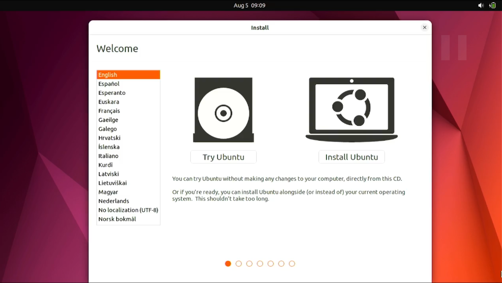
-
Pilih bahasa yang akan digunakan dan klik Continue.
-
-
Pengaturan Instalasi
-
Keyboard Layout: Pilih tata letak keyboard yang sesuai dan tekan Continue.

-
Updates and Other Software: Pilih apakah ingin menginstall pembaruan dan perangkat lunak pihak ketiga selama instalasi seperti codec multimedia.
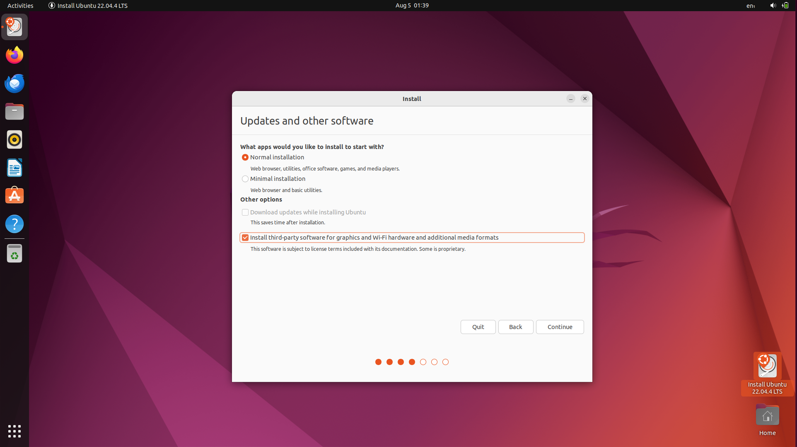
-
Installation Type :
- Install Ubuntu alongside [OS lama] untuk dual boot.
- Erase disk and install Ubuntu untuk menggantikan sistem operasi yang ada.
- Something else untuk membuat kustomisasi partisi instalasi secara manual.

-
Time Zone: Pilih zona waktu sesuai lokasi dan klik Continue.

-
-
Konfigurasi Pengguna
-
Masukkan nama pengguna dan password yang diinginkan.
-
Pilih metode login, apakah otomatis atau manual kemudian klik Continue.

-
-
Proses Instalasi dan Penyelesaian
-
Setelah semua pengaturan selesai, proses instalasi akan dimulai.

-
Tunggu hingga instalasi selesai. Setelah itu klik Restart Now.
-
Lepaskan USB ketika komputer melakukan restart.
-
Bab 2
Berkenalan dengan Ubuntu 22.04 LTS
Tujuan
Setelah menyelesaikan bab ini pembaca diharapkan dapat:
- Memahami antarmuka pengguna dan fitur-fitur umum Ubuntu.
Ubuntu 22.04 menggunakan lingkungan desktop GNOME versi 42 yang menawarkan antarmuka modern dan intuitif. Saat pengguna pertama kali masuk ke sistem mereka akan disambut oleh tampilan desktop yang bersih dengan panel atas yang menampilkan jam, pengaturan sistem, dan indikator status, serta dock di sisi kiri layar yang berisi pintasan ke aplikasi-aplikasi utama.

Top Bar/Panel Atas
Top bar adalah panel horizontal yang berada di bagian atas layar. Fitur ini menampilkan jam dan tanggal di bagian tengah.

Kemudian di sisi kanan terdapat indikator baterai, volume, jaringan, dan menu sistem. Melalui menu ini pengguna dapat mengakses pengaturan, mengunci layar, logout, atau mematikan perangkat.
Top bar bersifat statis dan selalu tampak sehingga memudahkan pengguna untuk memantau status sistem.
Dock
Dock adalah panel vertikal di sisi kiri layar yang berisi ikon-ikon aplikasi favorit dan aplikasi yang sedang berjalan. Pengguna dapat menambahkan atau menghapus aplikasi dari Dock sesuai kebutuhan. Letak Dock bisa diubah ke bawah atau kanan melalui pengaturan sistem. Dock memberikan kemudahan akses terhadap aplikasi yang sering digunakan.

Show Applications
Tombol Show Applications berada di bagian bawah Dock dan berfungsi untuk menampilkan seluruh aplikasi yang terpasang.

Setelah diklik pengguna dapat melihat grid aplikasi dan mencari aplikasi tertentu dengan mengetikkan namanya di kolom pencarian. Fitur ini mempercepat proses pencarian dan peluncuran aplikasi.
Activities Overview
Activities Overview dapat diakses dengan menekan tombol Super (biasanya logo Windows) atau mengarahkan kursor ke pojok kiri atas layar. Tampilan ini menampilkan semua jendela yang sedang aktif serta memungkinkan pengguna untuk mengatur dan berpindah antar workspace (desktop virtual). Fitur ini sangat berguna untuk multitasking dan manajemen jendela.

Touchpad Gestures
Ubuntu 22.04 mendukung berbagai gestur touchpad yang meningkatkan kenyamanan penggunaan, terutama pada laptop. Beberapa gestur umum yang tersedia antara lain:
- Geser tiga jari ke atas: membuka Activities Overview
- Geser tiga jari ke kiri atau kanan: berpindah antar workspace
Bab 3
Filesystem dan File Manager
Tujuan
Setelah menyelesaikan bab ini pembaca diharapkan dapat:
- Memberikan pemahaman tentang struktur file system di Linux/Ubuntu.
- Menjelaskan cara penggunaan file manager (Nautilus) untuk mengelola file dan folder.
Struktur File System di Linux
Berbeda dengan sistem operasi Windows yang menggunakan huruf drive seperti C:\ dan D:, Linux menggunakan struktur hirarki pohon yang dimulai dari root directory (/). Semua file dan direktori berada di bawah direktori root.
Di bawah root terdapat sejumlah direktori standar yang memiliki fungsi spesifik. Berikut penjelasan direktori utama yang umum ditemukan:
| Folder | Keterangan |
|---|---|
| /bin | Berisi binary atau executable file untuk perintah dasar Linux yang bisa digunakan semua user |
| /boot | Berisi file yang diperlukan untuk proses booting Linux, termasuk kernel |
| /dev | Penyimpan file khusus yang merepresentasikan perangkat keras (device) seperti USB, harddisk, dll |
| /etc | Direktori untuk menyimpan file konfigurasi sistem |
| /home | Berisi folder pribadi untuk setiap user yang terdaftar di sistem |
| /lib | Menyimpan library penting untuk program di /bin dan /sbin |
| /media | Lokasi otomatis untuk mounting media eksternal (USB, CD/DVD) |
| /mnt | Tempat untuk mounting filesystem secara manual |
| /opt | Lokasi opsional untuk software tambahan dari pihak ketiga |
| /proc | Virtual filesystem yang menampilkan informasi kernel dan proses |
| /root | Home directory untuk superuser (root) |
| /run | Direktori penyimpanan informasi runtime sistem |
| /sbin | Berisi program untuk administrasi sistem |
| /srv | Menyimpan data untuk layanan server seperti web atau FTP |
| /tmp | Direktori penyimpanan file sementara |
| /usr | Menyimpan program, library, dan dokumentasi tambahan |
Penggunaan File Manager
Ubuntu menyertakan file manager grafis yang bernama Nautilus. Nautilus adalah aplikasi yang memungkinkan pengguna untuk mengelola file dan folder secara visual mirip seperti Windows Explorer. Dengan Nautilus pengguna dapat dengan mudah mengelola file dan folder tanpa perlu mengetik perintah di terminal.
Untuk membuka Nautilus klik ikon Files yang terletak pada Dock di sisi layar.
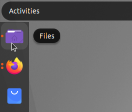
Alternatif lainnya tekan tombol Super (biasanya bergambar logo Windows pada keyboard) kemudian ketik “Files” atau “Nautilus” pada kolom pencarian aplikasi kemudian tekan Enter.
Setelah terbuka Nautilus akan menampilkan struktur direktori dan file yang dapat dikelola dengan mudah melalui klik atau pintasan keyboard.

Membuat Folder Baru
Untuk membuat folder baru buka Nautilus dan navigasikan ke lokasi tujuan, misalnya direktori Documents. Klik kanan pada area kosong lalu pilih menu New Folder.
Setelah itu sebuah folder baru akan muncul dan dapat langsung diberi nama sesuai kebutuhan.

Pembuatan folder juga dapat dilakukan dengan lebih cepat menggunakan kombinasi tombol Ctrl + Shift + N. Membuat folder baru berguna untuk mengelompokkan file berdasarkan jenis atau topik tertentu sehingga organisasi dokumen menjadi lebih terstruktur.
Menyalin atau Memindahkan File
Untuk menyalin file klik kanan file tersebut lalu pilih Copy, sedangkan untuk memindahkan file pilih Cut.

Setelah itu buka folder tujuan kemudian klik kanan dan pilih Paste.
Operasi ini juga dapat dipercepat menggunakan shortcut Ctrl + C untuk menyalin, Ctrl + X untuk memotong, dan Ctrl + V untuk menempelkan file.
Memindahkan File Menggunakan Drag and Drop
File atau folder dapat dipindahkan dengan mudah menggunakan teknik drag and drop. Buka satu lagi jendela Nautilus sebagai lokasi kemudian pilih file yang diinginkan, tekan dan tahan klik kiri lalu seret file tersebut ke lokasi tujuan kemudian lepaskan.
Menghapus File
Menghapus file dalam Nautilus dapat dilakukan dengan klik kanan pada file dan memilih opsi Move to Trash.

Untuk kepraktisan file juga dapat langsung dipindahkan ke Trash dengan menekan tombol Delete pada keyboard. File yang dihapus tidak langsung hilang melainkan disimpan sementara di dalam direktori Trash hingga benar-benar dihapus permanen. Jika ingin menghapus file secara permanen dapat menggunakan shortcut Shift + Delete.
Melihat Detail File
Untuk melihat rincian file seperti ukuran, jenis, lokasi, dan hak akses, klik kanan file atau folder lalu pilih Properties atau dapat menggunakan shortcut Alt + Enter.

Menampilkan File dan Folder Tersembunyi
Untuk menampilkan file atau folder tersembunyi tekan kombinasi Ctrl + H saat berada di jendela Nautilus. File tersembunyi biasanya diawali dengan tanda titik (.). Tekan kembali Ctrl + H untuk menyembunyikannya.
Kombinasi Tombol Nautilus
Setelah memahami berbagai fungsi dasar Nautilus sebagai pengelola file di Ubuntu penting juga untuk mengenal shortcut yang tersedia untuk mempercepat navigasi dan manajemen file. Shortcut ini mempermudah interaksi dengan file manager tanpa perlu banyak menggunakan mouse sehingga meningkatkan efisiensi kerja. Berikut ini adalah tabel shortcut penting yang dapat digunakan dalam Nautilus:
| No | Kombinasi Tombol | Fungsi |
|---|---|---|
| 1 | Ctrl + N | Membuat jendela Nautilus baru |
| 2 | Ctrl + Shift + N | Membuat folder baru |
| 3 | Ctrl + C | Menyalin file atau folder |
| 4 | Ctrl + X | Memotong (cut) file atau folder |
| 5 | Ctrl + V | Menempel (paste) file atau folder |
| 6 | Delete | Mengirim file atau folder ke Trash |
| 7 | Shift + Delete | Menghapus file atau folder secara permanen |
| 8 | Ctrl + H | Menampilkan atau menyembunyikan file tersembunyi |
| 9 | Ctrl + F | Membuka kolom pencarian file atau folder |
| 10 | Alt + Enter | Melihat properti file atau folder |
| 11 | Alt + Up Arrow | Naik ke direktori induk |
| 12 | Alt + Left Arrow | Kembali ke direktori sebelumnya |
| 13 | Alt + Right Arrow | Maju ke direktori berikutnya |
| 14 | F2 | Mengganti nama (rename) file atau folder |
| 15 | Ctrl + L | Memunculkan path lokasi dalam bentuk teks |
| 16 | F9 | Menampilkan atau menyembunyikan panel sidebar |
| 17 | Tab | Menampilkan atau menyembunyikan panel sidebar |
Bab 4
Metode Instalasi Program Aplikasi
Tujuan
Setelah menyelesaikan bab ini pembaca diharapkan dapat:
- Menginstal perangkat lunak menggunakan GUI dan CLI pada Ubuntu.
Instalasi Aplikasi di Ubuntu Menggunakan GUI dengan Ubuntu Software
Tujuan
Setelah menyelesaikan bab ini pembaca diharapkan dapat:
- Menginstal perangkat lunak menggunakan GUI pada Ubuntu menggunakan Ubuntu Software.
Langkah-Langkah Instalasi Melalui GUI dengan Ubuntu Software
-
Buka Ubuntu Software
Ubuntu Software merupakan tempat untuk mencari dan melakukan instalasi aplikasi yang tersedia secara resmi di repositori Ubuntu. Untuk membukanya, klik ikon Ubuntu Software yang biasanya ada di dock (panel samping kiri) atau cari melalui menu Applications.
-
Cari Aplikasi yang Ingin di Install
Setelah aplikasi terbuka, terdapat kotak pencarian di bagian kiri atas. Gunakan fitur pencarian ini untuk mengetik nama aplikasi yang ingin diinstal, seperti "Android Studio". Ubuntu Software akan menampilkan hasil pencarian yang relevan. -
Pilih Aplikasi dan Install
Setelah menemukan aplikasi yang diinginkan, klik pada aplikasi tersebut untuk membuka halaman rincian. Di sini anda akan melihat informasi tentang aplikasi, termasuk ukuran, ulasan pengguna, dan pengembangnya. Untuk memulai instalasi tekan tombol Install. -
Masukkan Password
Karena penginstalan perangkat lunak memerlukan hak akses administrator, anda akan diminta untuk memasukkan password pengguna. Masukkan password akun yang memiliki hak administratif pada sistem, lalu klik Authenticate.
-
Proses Instalasi
Setelah otorisasi berhasil, proses instalasi akan dimulai. anda dapat melihat progress bar yang menunjukkan status instalasi. Jika perangkat lunak yang diinstal memiliki dependensi tambahan, Ubuntu Software akan otomatis mengunduh dan melakukan instalasi juga.
Instalasi Aplikasi di Ubuntu Menggunakan GUI dengan Synaptic Package Manager
Tujuan
Setelah menyelesaikan bab ini pembaca diharapkan dapat:
- Menginstal aplikasi menggunakan GUI pada Ubuntu dengan Synaptic Package Manager.
Langkah-Langkah Instalasi Melalui GUI dengan Synaptic Package Manager
-
Buka Synaptic Package Manager
Untuk membuka Synaptic Package Manager dapat ditemukan pada menu applications atau menjalankan perintahsudo synapticpada terminal.
-
Cari Aplikasi yang Diinginkan
Di dalam Synaptic gunakan kotak pencarian di pojok kanan atas untuk mencari aplikasi. Misalnya ketik GIMP untuk mencari aplikasi pengolah gambar.
-
Memilih Paket untuk Instalasi
Setelah menemukan aplikasi yang diinginkan, klik kanan pada nama aplikasi tersebut dan pilih Mark for Installation. Synaptic akan menampilkan daftar paket dan dependensi yang diperlukan untuk aplikasi tersebut, yang juga akan ditandai untuk diinstal. Proses penandaan ini memastikan bahwa semua kebutuhan aplikasi sudah terpenuhi sebelum diinstal.
-
Konfirmasi Instalasi
Setelah aplikasi ditandai, klik tombol Apply di toolbar bagian atas untuk memulai proses instalasi.Sebuah jendela konfirmasi akan muncul, menampilkan daftar aplikasi dan dependensi yang akan diinstal. Klik Apply sekali lagi untuk melanjutkan instalasi.

Synaptic kemudian akan mengunduh dan menginstal aplikasi serta dependensi yang diperlukan.

-
Menyelesaikan Instalasi
Setelah proses instalasi selesai, anda dapat menemukan aplikasi di menu Applications. Dengan Synaptic aplikasi dan semua dependensinya telah diatur dan aplikasi siap digunakan. Jika aplikasi memerlukan pembaruan di masa mendatang, Synaptic akan menampilkannya di daftar pembaruan.
Instalasi Aplikasi di Ubuntu Menggunakan CLI dengan APT
Tujuan
Setelah menyelesaikan bab ini pembaca diharapkan dapat:
- Menginstal perangkat lunak menggunakan CLI pada Ubuntu dengan APT.
Langkah-Langkah Instalasi Melalui CLI dengan APT
-
Buka Terminal
Untuk mengakses CLI, buka terminal dengan menekan kombinasi tombolCtrl + Alt + Tatau cari "Terminal" di menu Applications. Terminal akan terbuka dan siap menerima perintah. -
Perbaruan daftar paket
Sebelum melakukan instalasi aplikasi penting untuk memperbarui daftar paket agar sistem memiliki informasi terbaru tentang perangkat lunak di repositori. Jalankan perintahsudo apt updatekemudian masukkan password ketika diminta, kemudian sistem akan mengunduh daftar paket terbaru. -
Install Aplikasi
Setelah daftar paket diperbarui anda dapat melakukan instalasi aplikasi dengan perintahapt install. Sebagai contoh untuk instalasi VirtualBox jalankan perintahsudo apt install virtualbox, sistem akan mengunduh dan melakukan instalasi aplikasi beserta dependensinya.
-
Konfirmasi Instalasi
Jika ada konfirmasi untuk melanjutkan instalasi, sistem akan menampilkan prompt yang meminta anda mengetik "y" (yes) untuk melanjutkan. Tekan y dan Enter untuk konfirmasi. -
Instalasi Selesai
Setelah proses selesai, aplikasi siap digunakan. Aplikasi yang telah diinstal dapat ditemukan di menu Applications, atau bisa langsung dibuka melalui terminal dengan mengetik nama aplikasinya.
Instalasi Aplikasi di Ubuntu Menggunakan CLI dengan FLATPAK
Tujuan
Setelah menyelesaikan bab ini pembaca diharapkan dapat:
- Menginstal perangkat lunak menggunakan CLI pada Ubuntu dengan FLATPAK.
Langkah-Langkah Instalasi Melalui CLI dengan FLATPAK
-
Memastikan Flatpak Terinstal
Sebelum menggunakan Flatpak, pastikan paket Flatpak telah terinstal di sistem. Anda bisa menginstalnya dengan perintahsudo apt install flatpak. Agar dapat mengunduh aplikasi, tambahkan Flathub ke sistem Anda dengan perintahflatpak remote-add --if-not-exists flathub https://flathub.org/repo/flathub.flatpakrepo -
Mencari Aplikasi di Flathub
Untuk mencari aplikasi yang diinginkan, buka situs Flathub di browser Anda. Di sana anda dapat menjelajahi aplikasi yang tersedia, membaca deskripsi, dan mengonfirmasi ID aplikasi untuk instalasi.
-
Menginstall Aplikasi dengan Flatpak
Setelah menemukan aplikasi di Flathub, catat ID aplikasi yang ditampilkan, dan gunakan perintah berikut untuk instalasi. Sebagai contoh, untuk menginstal Godot Engine ketikflatpak install flathub org.godotengine.Godot.Kemudian flatpak akan mendownload aplikasi beserta dependensinya dan menginstalnya secara otomatis.

-
Konfirmasi Instalasi
Jika ada konfirmasi untuk melanjutkan instalasi, sistem akan menampilkan prompt yang meminta anda mengetik "y" (yes) untuk melanjutkan. Tekan y dan Enter untuk konfirmasi. -
Instalasi Selesai
Setelah proses selesai, aplikasi siap digunakan. Aplikasi yang telah diinstal dapat ditemukan di menu Applications, atau bisa langsung dibuka melalui terminal dengan mengetikflatpak install flathub org.godotengine.Godot.
Instalasi Aplikasi di Ubuntu Menggunakan CLI dengan SNAP
Tujuan
Setelah menyelesaikan bab ini pembaca diharapkan dapat:
- Menginstal perangkat lunak menggunakan CLI pada Ubuntu dengan SNAP.
Langkah-Langkah Instalasi Melalui CLI dengan FLATPAK
-
Memastikan Flatpak Terinstal
Pada ubuntu 22.04 LTS secara bawaan sudah terinstall snap, untuk memastikan dapat menggunakan perintahsnap versionpada terminal.
-
Mencari Aplikasi di Snapcraft
Untuk mencari aplikasi yang diinginkan, buka situs Snapcraft di browser, disana anda dapat menjelajahi aplikasi yang tersedia. -
Menginstall Aplikasi dengan Snap
Setelah menemukan aplikasi di Snapcraft, salin script instalasi yang ditampilkan, dan gunakan perintah tersebut untuk instalasi. Sebagai contoh, untuk menginstal freeCAD menggunakansudo snap install freecad.
Kemudian snap akan mendownload aplikasi beserta dependensinya dan menginstalnya secara otomatis.

-
Instalasi Selesai
Setelah proses selesai, aplikasi siap digunakan. Aplikasi yang telah diinstal dapat ditemukan di menu Applications, atau bisa langsung dibuka melalui terminal dengan mengetik nama aplikasi.
Instalasi Paket .deb di Ubuntu Menggunakan GUI dengan Ubuntu Software
Tujuan
Setelah menyelesaikan bab ini pembaca diharapkan dapat:
- Menginstal paket .deb menggunakan Ubuntu Software.
Langkah-Langkah Instalasi Paket .deb dengan Ubuntu Software
-
Mengunduh File.deb
Langkah pertama adalah mengunduh file .deb dari sumber terpercaya. Sebagai contoh, unduh aplikasi Visual Studi Code dari situs resminya, yaitu code.visualstudio.com/download. Pastikan file tersimpan pada direktori yang mudah diakses, seperti Downloads. -
Buka File.deb
Setelah pengunduhan selesai, temukan file yang telah diunduh pada direktori penyimpanan. Klik kanan pada file .deb pilih Open With Other Application kemudian pilih software install, maka aplikasi ubuntu software akan terbuka secara otomatis.
-
Memulai Instalasi
Klik tombol Install pada antarmuka Ubuntu Software.
Jika diminta, masukkan kata sandi administrator untuk mengonfirmasi tindakan. Proses instalasi akan berjalan secara otomatis.

-
Memverifikasi Instalasi
Setelah instalasi selesai, aplikasi akan tersedia di menu utama sistem operasi atau dapat membuka aplikasi dari menu Applications.
Instalasi Paket .deb di Ubuntu Menggunakan GUI dengan GDebi Package Installer
Tujuan
Setelah menyelesaikan bab ini pembaca diharapkan dapat:
- Menginstal paket .deb menggunakan GDebi Package Installer.
Langkah-Langkah Instalasi Paket .deb dengan Ubuntu Software
-
Menginstal GDebi Package Installer
Jika aplikasi GDebi belum terinstal pada sistem, pengguna dapat menginstalnya terlebih dahulu. Hal ini dapat dilakukan melalui terminal dengan perintah sudo apt install gdebi. -
Buka File.deb
Setelah pengunduhan selesai, temukan file yang telah diunduh pada direktori penyimpanan. Klik kanan pada file .deb pilih Open With Other Application kemudian pilih GDebi Package Installer, File akan terbuka di antarmuka GDebi. -
Memulai Instalasi
Pada jendela GDebi, klik tombol Install Package untuk memulai proses instalasi. GDebi akan secara otomatis memeriksa dan menginstal dependensi yang diperlukan.Jika diminta, masukkan kata sandi administrator untuk mengonfirmasi tindakan. Proses instalasi akan berjalan secara otomatis.
-
Memverifikasi Instalasi
Setelah instalasi selesai, aplikasi akan tersedia di menu utama sistem operasi atau dapat membuka aplikasi dari menu Applications.
Instalasi Paket .deb di Ubuntu Menggunakan CLI
Tujuan
Setelah menyelesaikan bab ini pembaca diharapkan dapat:
- Menginstal paket .deb menggunakan CLI.
Langkah-Langkah Instalasi Paket .deb dengan CLI
-
Mengunduh File.deb
Langkah pertama adalah mengunduh file .deb dari sumber terpercaya. Sebagai contoh, unduh aplikasi Visual Studi Code dari situs resminya, yaitu code.visualstudio.com/download. Pastikan file tersimpan pada direktori yang mudah diakses, seperti Downloads. -
Buka Terminal dan Navigasi ke Folder Unduhan
Setelah pengunduhan selesai, buka terminal dengan kombinasi tombol Ctrl + Alt + T, kemudian navigasikan ke folder tempat file .deb disimpan dengan perintah cd ~/Downloads. -
Install File .deb dengan dpkg
Jalankan perintah sudo dpkg -i nama_file.deb, gantilah nama_file.deb menjadi nama file yang baru saja di download misalnya paket Visual Studio Code. Nama paket file Visual Studio Code adalah code_1.93.1-1726079302_amd64.deb, sehingga untuk melakukan instalasi menggunakan perintah sudo dpkg -i code_1.93.1-1726079302_amd64.deb.
-
Perbaiki Dependensi (Jika Ada)
Jika paket .deb memiliki dependensi yang belum terpasang, anda akan melihat pesan kesalahan. Untuk memperbaikinya jalankan perintah sudo apt --fix-broken install untuk instalasi dependensi yang diperlukan. -
Instalasi Selesai
Setelah dependensi diperbaiki aplikasi siap digunakan. Buka dari menu Applications atau langsung dari terminal dengan mengetikkan nama aplikasi.
Bab 5
Instalasi Program Aplikasi
Tujuan
Setelah menyelesaikan bab ini pembaca diharapkan dapat:
- Mengetahui aplikasi yang digunakan pada kurikulum prodi Pendidikan Komputer
- Menginstall aplikasi yang digunakan pada kurikulum prodi Pendidikan Komputer
Berikut merupakan daftar kebutuhann perangkat lunak pada tiap mata kuliah.
No | Mata Kuliah | Perangkat Lunak | Platform | |
Windows | Ubuntu | |||
1 | Agama | Quran for windows | Desktop | |
Perangkat Lunak Umum | Perangkat Lunak Umum |
| ||
2 | Pancasila | Perangkat Lunak Umum | Perangkat Lunak Umum |
|
3 | Kewarganegaraan | Perangkat Lunak Umum | Perangkat Lunak Umum |
|
4 | Bahasa Indonesia | KBBI Daring | KBBI Daring | Website |
Perangkat Lunak Umum | Perangkat Lunak Umum |
| ||
5 | Bahasa Inggris | Kamus Bahasa Inggris | Kamus Bahasa Inggris | Website |
Gramarly | Gramarly | Website | ||
Perangkat Lunak Umum | Perangkat Lunak Umum |
| ||
6 | Pengantar Lingkungan Lahan Basah | Perangkat Lunak Umum | Perangkat Lunak Umum |
|
7 | Kewirausahaan | Perangkat Lunak Umum | Perangkat Lunak Umum |
|
8 | Pengantar Pendidikan | Perangkat Lunak Umum | Perangkat Lunak Umum |
|
9 | Perkembangan Peserta Didik | Perangkat Lunak Umum | Perangkat Lunak Umum |
|
10 | Belajar dan Pembelajaran | Perangkat Lunak Umum | Perangkat Lunak Umum |
|
11 | Profesi Kependidikan | Perangkat Lunak Umum | Perangkat Lunak Umum |
|
12 | Manajemen Dan Administrasi Sekolah | Perangkat Lunak Umum | Perangkat Lunak Umum |
|
13 | Matematika Dasar | Perangkat Lunak Umum | Perangkat Lunak Umum |
|
Desktop | ||||
Mathematics | Desktop | |||
14 | Fisika Dasar | PhET Interactive Simulation | PhET Interactive Simulation | Website |
Desktop | ||||
15 | Pemrograman Dasar 1 | Desktop | ||
Desktop | ||||
Desktop | ||||
Desktop | ||||
Desktop | ||||
16 | Pengantar Sistem Dijital | Logic.ly | Logic.ly | Website |
17 | Matematika Diskrit | Perangkat Lunak Umum | Perangkat Lunak Umum |
|
18 | Kalkulus | Desktop | ||
Maple | Desktop | |||
Perangkat Lunak Umum | Perangkat Lunak Umum |
| ||
Mathematics | Desktop | |||
19 | Pengantar Organisasi Komputer | Perangkat Lunak Umum | Perangkat Lunak Umum |
|
20 | Struktur Data | Desktop | ||
Desktop | ||||
Desktop | ||||
Desktop | ||||
21 | Pemrograman Web 1 | HTML | HTML |
|
CSS | CSS |
| ||
Javascript | Javascript |
| ||
Git Bash | Desktop | |||
22 | Aljabar Linear | Perangkat Lunak Umum | Perangkat Lunak Umum |
|
23 | Statistika dan Probabilitas | Desktop | ||
SPSS | Desktop | |||
Perangkat Lunak Umum | Perangkat Lunak Umum |
| ||
24 | Pemrograman Dasar 2 | Desktop | ||
Desktop | ||||
25 | Sistem Operasi | Linux | Linux |
|
Windows | Windows |
| ||
26 | Disain dan Analisis Algoritma | Desktop | ||
Desktop | ||||
27 | Pemrosesan Citra Digital | Desktop | ||
Desktop | ||||
28 | Basis Data | Desktop | ||
Desktop | ||||
29 | Pemrograman Perangkat Bergerak | Desktop | ||
30 | Pemrograman Web 2 | Desktop | ||
Desktop | ||||
MariaDB | Desktop | |||
Desktop | ||||
Desktop | ||||
Desktop | ||||
Git Bash | Desktop | |||
31 | Jaringan dan Komunikasi Data | Desktop | ||
Cisco Packet Tracer | GNS3 | Desktop | ||
Desktop | ||||
32 | Logika Untuk Ilmu Komputer | Desktop | ||
Perangkat Lunak Umum | Perangkat Lunak Umum |
| ||
33 | Pengembangan Open Source | Desktop | ||
| ||||
| ||||
Desktop | ||||
34 | Teknik Pengolahan Multimedia | Desktop | ||
Adobe Premier | Desktop | |||
Desktop | ||||
Adobe Photoshop | Desktop | |||
CorelDraw | Desktop | |||
35 | Sistem Interaksi | Desktop | ||
36 | Rekayasa Perangkat Lunak | Desktop | ||
Website | ||||
37 | Proyek Perangkat Lunak | Desktop | ||
make | make | Desktop | ||
38 | Sistem Informasi Pendidikan | Perangkat Lunak Umum | Perangkat Lunak Umum |
|
39 | Data Sains | Desktop | ||
Desktop | ||||
Numpy | Numpy |
| ||
Pandas | Pandas |
| ||
Desktop | ||||
40 | Pengajaran Berbantuan Komputer | iSpring | Desktop | |
Google Classroom | Google Classroom | Website | ||
Website | ||||
41 | Metode Numerik | Desktop | ||
Desktop | ||||
Perangkat Lunak Umum | Perangkat Lunak Umum |
| ||
42 | Sistem Informasi Geografis* | ArcGIS | Desktop | |
Google Maps | Google Maps | Website | ||
Google Earth | Google Earth | Website | ||
43 | Grafika Komputer* | OpenGL | WebGL | Desktop |
Desktop | ||||
44 | Sistem Cerdas* | Desktop | ||
Desktop | ||||
Desktop | ||||
Google Collabs | Google Collabs | Website | ||
45 | Pilihan Lintas Prodi 1 | Perangkat Lunak Umum | Perangkat Lunak Umum |
|
46 | Pilihan Lintas Prodi 2 | Perangkat Lunak Umum | Perangkat Lunak Umum |
|
47 | Pilihan Lintas Prodi 3 | Perangkat Lunak Umum | Perangkat Lunak Umum |
|
48 | Mesin Learning* | Desktop | ||
Desktop | ||||
Desktop | ||||
Desktop | ||||
49 | Simulasi dan Pemodelan* | Desktop | ||
Desktop | ||||
50 | Digital Fotografi* | Adobe Lightroom | Desktop | |
Adobe Photoshop |
| |||
51 | Pemrograman Logika* | Desktop | ||
52 | Pengolahan Bahasa Manusia* | Desktop | ||
Desktop | ||||
Desktop | ||||
53 | Kriptografi dan Keamanan Informasi* | Desktop | ||
Desktop | ||||
Desktop | ||||
Perangkat Lunak Umum | Perangkat Lunak Umum |
| ||
54 | Penjaminan Mutu Perangkat Lunak* | Perangkat Lunak Umum | Perangkat Lunak Umum |
|
55 | Manajemen Proyek* | Leantime | Leantime |
|
56 | Administrasi Sistem* | Nptool | Nptool | Desktop |
57 | Media & Teknologi Pembelajaran | ISpring | Desktop | |
Desktop | ||||
58 | PKL* | Perangkat Lunak Umum | Perangkat Lunak Umum |
|
59 | Telaah Kurikulum SMK (Disain instruksional) | Perangkat Lunak Umum | Perangkat Lunak Umum |
|
60 | Strategi Belajar Mengajar | Perangkat Lunak Umum | Perangkat Lunak Umum |
|
61 | Evaluasi Pembelajaran | Anates | Desktop | |
SPSS | Desktop | |||
Perangkat Lunak Umum | Perangkat Lunak Umum |
| ||
62 | Perencanaan Pembelajaran Ilmu Komputer | Perangkat Lunak Umum | Perangkat Lunak Umum |
|
63 | Program Latihan Persekolahan 1 (PLP 1) | Perangkat Lunak Umum | Perangkat Lunak Umum |
|
64 | Program Latihan Persekolahan 2 (PLP 2) | Perangkat Lunak Umum | Perangkat Lunak Umum |
|
65 | Metodologi Penelitian | SPSS | Desktop | |
Perangkat Lunak Umum | Perangkat Lunak Umum |
| ||
66 | Komputer Masyarakat | Perangkat Lunak Umum | Perangkat Lunak Umum |
|
67 | Skripsi | Perangkat Lunak Umum & Khusus | Perangkat Lunak Umum & Khusus |
|
Instalasi Python
Python adalah salah satu bahasa pemrograman yang paling populer dan banyak digunakan di berbagai bidang, termasuk pengembangan web, analisis data, kecerdasan buatan, hingga otomatisasi tugas. Menurut survei tahunan yang dilakukan oleh Stack Overflow, Python secara konsisten menempati peringkat teratas sebagai bahasa yang paling disukai oleh pengembang. Hal ini disebabkan oleh sintaksnya yang sederhana, ekosistem pustaka yang luas, serta dukungan komunitas yang sangat aktif.
Langkah-Langkah Instalasi
1. Periksa Python apakah sudah terinstall
Sebelum menginstal Python, periksa apakah Python sudah terinstal di sistem. Gunakan perintah berikut di terminal:
python3 -V`
Jika Python sudah terinstall maka outputnya akan seperti berikut:
Python 3.10.12
Secara bawaan Ubuntu 22.04 LTS sudah terpasang python versi 3.10.12. Jika Python belum terinstall dapat melanjutkan langkah-langkah selanjutnya.
2. Perbarui Sistem
Sebelum melakukan instalasi, pastikan sistem Ubuntu dalam keadaan terbaru dengan memperbarui daftar paket terlebih dahulu, pada terminal gunakan perintah berikut:
sudo apt update && sudo apt upgrade -y
3. Install Python
Gunakan perintah berikut untuk menginstal Python:
sudo apt install python3 -y
Jika instalasi berhasil outputnya akan seperti berikut :
Unpacking python3 (3.10.6-1~22.04.1) ...
Setting up python3 (3.10.6-1~22.04.1) ...
running python rtupdate hooks for python3.10...
running python post-rtupdate hooks for python3.10...
Processing triggers for man-db (2.10.2-1) ...
4. Verifikasi instalasi
Verifikasi instalasi dengan memeriksa versi python yang baru diinstall
python3 -V
Outputnya akan seperti berikut:
Python 3.10.12
5. Membuat Alias Python
Agar python dapat dijalan dengan perintah “python” saja maka install terlehih dahulu python-is-python3 dengan perintah berikut.
sudo apt install python-is-python3 -y
Jika instalasi berhasil output baris terakhirnya akan seperti berikut:
Preparing to unpack .../python-is-python3_3.9.2-2_all.deb ...
Unpacking python-is-python3 (3.9.2-2) ...
Setting up python-is-python3 (3.9.2-2) ...
Processing triggers for man-db (2.10.2-1) ...
6. Menjalankan Python Interaktif
Setelah terinstal, python dapat langsung dijalankan melalui terminal dengan perintah berikut:
python
Jika berhasil outputnya akan seperti berikut:
Python 3.10.12 (main, Jan 17 2025, 14:35:34) [GCC 11.4.0] on linux
Type "help", "copyright", "credits" or "license" for more information.
>>>
Instalasi Idle Python
UIDLE (Integrated Development and Learning Environment) adalah IDE bawaan Python yang dikembangkan oleh Guido van Rossum, pencipta Python itu sendiri. IDLE dirancang untuk memberikan pengalaman pengkodean yang lebih nyaman bagi pemula dan pengguna yang ingin menulis serta menjalankan skrip Python dengan cepat tanpa perlu menginstal IDE yang lebih kompleks seperti PyCharm atau VS Code.
Langkah-Langkah Instalasi
1. Perbarui Sistem
Gunakan perintah berikut untuk memperbarui sistem:
sudo apt update && sudo apt upgrade -y
2. Install IDLE
IDLE dapat dinstall menggunakan perintah berikut:
sudo apt install idle3 -y
Jika berhasil output baris terakhirnya akan seperti berikut:
Setting up idle-python3.10 (3.10.12-1~22.04.7) ...
Setting up idle (3.10.6-1~22.04.1) ...
Setting up idle3 (3.10.6-1~22.04.1) ...
Processing triggers for desktop-file-utils (0.26-
1ubuntu3) ...
Processing triggers for gnome-menus (3.36.0-1ubuntu3) ...
Processing triggers for man-db (2.10.2-1) ...
Processing triggers for mailcap (3.70+nmu1ubuntu1)
...
Processing triggers for fontconfig (2.13.1-
4.2ubuntu5) ...
3. Menjalankan IDLE Python
Setelah instalasi berhasil, IDLE dapat dijalankan melalui terminal atau menu aplikasi Ubuntu.
-
Menjalankan IDLE dari Terminal Untuk membuka IDLE, jalankan perintah berikut di terminal:
idleKemudian jendela IDLE akan ditampilkan
-
Menjalankan IDLE dari Menu Aplikasi
Klik ikon show applications pada bagian paling bawah dash Ubuntu.


Instalasi Pip
PIP adalah sistem manajemen paket untuk Python yang memungkinkan pengguna menginstal, memperbarui, dan menghapus pustaka Python dengan mudah. Dengan menggunakan PIP, pengguna dapat mengakses ribuan pustaka yang tersedia di Python Package Index (PyPI) tanpa perlu menginstalnya secara manual.
Langkah-Langkah Instalasi
1. Pastikan Python sudah terpasang
Gunakan perintah berikut untuk memastikan python sudah terpasang:
python3 -V
Jika sudah terpasang outputnya akan seperti berikut :
Python 3.10.12
2. Perbarui sistem
Untuk memperbarui sistem dapat menggunakan perintah berikut:
sudo apt update && sudo apt upgrade -y
3. Install Pip
Gunakan perintah berikut untuk memasang pip.
sudo apt install python3-pip -y
Tunggu hingga proses instalasi selesai, berikut output baris terakhir jika instalasi telah selesai:
Preparing to unpack .../python3-pip_22.0.2+dfsg-1ubuntu0.5_all.deb ...
Unpacking python3-pip (22.0.2+dfsg-1ubuntu0.5) ...
Setting up python3-distutils (3.10.8-1~22.04) ...
Setting up python3-setuptools (59.6.0-1.2ubuntu0.22.04.2) ...
Setting up python3-wheel (0.37.1-2ubuntu0.22.04.1) ...
Setting up python3-dev (3.10.6-1~22.04.1) ...
Setting up python3-pip (22.0.2+dfsg-1ubuntu0.5) ...
Processing triggers for man-db (2.10.2-1) ...
4. Verifikasi instalasi
Periksa versi pip yang sudah terpasang dengan perintah berikut.
pip -V
Outputnya akan seperti berikut:
pip 22.0.2 from /usr/lib/python3/dist-packages/pip (python 3.10)
Instalasi Visual Studio Code
Visual Studio Code (VS Code) adalah editor kode sumber yang ringan namun kuat yang dikembangkan oleh Microsoft. Editor ini populer di kalangan pengembang perangkat lunak karena mendukung berbagai bahasa pemrograman, memiliki ekstensi yang kaya, serta fitur seperti debugging, terminal bawaan, dan integrasi Git (Microsoft, 2023).
Langkah-Langkah Instalasi
1. Buka Ubuntu Software
Untuk membuka ubuntu software dapat mengklik ikon ubuntu software pada menu applications.

2. Cari Visual Studio Code
Klik icon search pada pojok kiri atas ubuntu software kemudian masukkan keyword "Visual Studio Code".
3. Install Visual Studio Code
Pilih software yang sesuai kemudian tekan tombol install.

4. Verifikasi Instalasi
Tunggu hingga proses instalasi selesai, Visual Studio Code yang sudah terinstall dapat ditemukan pada menu Applications.
Instalasi Visual Studio Code dengan CLI
1. Unduh File Instalasi Visual Studio Code
Kunjungi https://code.visualstudio.com/download kemudian unduh file instalasi untuk sistem operasi ubuntu.
2. Install Visual Studio Code
Pada terminal masuk ke direktori tempat file instalasi visual studio code disimpan (biasanya terletak pada direktori Downloads), gunakan perintah berikut untuk berpindah direktori:
cd Downloads/
Berikut adalah output jika telah berpindah direktori:
arie@zeno:~/Downloads$
Kemudian gunakan perintah berikut untuk melakukan instalasi visual studio code:
sudo dpkg -i code_1.96.4-1736991114_amd64.deb
Jika instalasi berhasil outputnya akan seperti berikut:
Setting up code (1.96.4-1736991114) ...
Processing triggers for gnome-menus (3.36.0-1ubuntu3) ...
Processing triggers for mailcap (3.70+nmu1ubuntu1) ...
Processing triggers for desktop-file-utils (0.26-1ubuntu3) ...
Processing triggers for shared-mime-info (2.1-2) ...
3. Verifikasi Instalasi
Visual Studio Code yang sudah terinstall dapat ditemukan pada menu Applications. Visual studio code yang sudah terinstall juga dapat dijalankan dengan perintah berikut pada terminal:
code
Kemudian jendela visual studio code akan muncul. Berikut adalah Visual Studio Code ketika berjalan di Ubuntu 22.04 LTS.
Instalasi GNU Octave
GNU Octave adalah perangkat lunak open source yang digunakan untuk komputasi numerik, sering dianggap sebagai alternatif dari MATLAB. Octave menyediakan lingkungan berbasis bahasa pemrograman tingkat tinggi yang mendukung operasi matriks, pemrosesan data, visualisasi grafis, serta berbagai fungsi matematika dan statistik.
Langkah-Langkah Instalasi
1. Buka Ubuntu Software
Untuk membuka ubuntu software dapat mengklik icon ubuntu software pada menu applications.

2. Cari GNU Octave
Klik icon search pada pojok kiri atas ubuntu software kemudian masukkan keyword "GNU Octave".

3. Install GNU Octave
Pilih software yang sesuai kemudian tekan tombol install.
4. Verifikasi Instalasi
Tunggu hingga proses instalasi selesai, GNU Octave yang sudah terinstall dapat ditemukan pada menu Applications.
Berikut adalah GNU Octave ketika berjalan di Ubuntu 22.04 LTS.

Instalasi SWI-Prolog
SWI-Prolog adalah implementasi bahasa pemrograman Prolog yang populer, dikembangkan oleh Jan Wielemaker dan komunitasnya. Prolog sendiri adalah bahasa pemrograman berbasis logika yang banyak digunakan dalam kecerdasan buatan (AI), sistem pakar, pemrosesan bahasa alami (NLP), serta pengembangan basis data berbasis aturan.
Langkah-Langkah Instalasi
1. Buka Ubuntu Software
Untuk membuka ubuntu software dapat mengklik icon ubuntu software pada menu applications.

2. Cari SWI-Prolog
Klik icon search pada pojok kiri atas ubuntu software kemudian masukkan keyword "SWI-Prolog".
3. Install SWI-Prolog
Pilih software yang sesuai kemudian tekan tombol install. 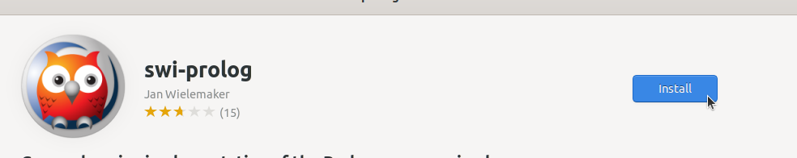
4. Verifikasi Instalasi
Tunggu hingga proses instalasi selesai, SWI-Prolog yang sudah terinstall dapat ditemukan pada menu Applications. Berikut adalah SWI-Prolog ketika berjalan di Ubuntu 22.04 LTS.
Instalasi Wireshark
Wireshark adalah alat pemantauan jaringan open-source yang digunakan untuk menangkap dan menganalisis paket data yang melintasi jaringan komputer. Wireshark memungkinkan pengguna untuk memeriksa lalu lintas jaringan secara real-time, menganalisis protokol jaringan, serta mendeteksi masalah konektivitas dan performa. Wireshark mendukung berbagai protokol jaringan seperti TCP, UDP, HTTP, DNS, dan banyak lagi.
Langkah-Langkah Instalasi
1. Buka Ubuntu Software
Untuk membuka ubuntu software dapat mengklik icon ubuntu software pada menu applications.

2. Cari Wireshark
Klik icon search pada pojok kiri atas ubuntu software kemudian masukkan keyword "Wireshark".

3. Install Wireshark
Pilih software yang sesuai kemudian tekan tombol install.
4. Verifikasi Instalasi
Tunggu hingga proses instalasi selesai, Wireshark yang sudah terinstall dapat ditemukan pada menu Applications.
Berikut adalah Wireshark ketika berjalan di Ubuntu 22.04 LTS.

Instalasi VirtualBox
VirtualBox adalah perangkat lunak open-source yang memungkinkan pengguna untuk menjalankan sistem operasi lain (guest OS) di dalam sistem operasi utama (host OS) secara virtual. VirtualBox mendukung berbagai sistem operasi, seperti Linux, Windows, dan macOS, sehingga pengguna dapat menjalankan banyak sistem operasi dalam satu perangkat keras fisik secara bersamaan
Langkah-Langkah Instalasi
1. Buka Ubuntu Software
Untuk membuka ubuntu software dapat mengklik icon ubuntu software pada menu applications.

2. Cari VirtualBox
Klik icon search pada pojok kiri atas ubuntu software kemudian masukkan keyword "VirtualBox".
3. Install VirtualBox
Pilih software yang sesuai kemudian tekan tombol install.
4. Verifikasi Instalasi
Tunggu hingga proses instalasi selesai, VirtualBox yang sudah terinstall dapat ditemukan pada menu Applications. Berikut adalah VirtualBox ketika berjalan di Ubuntu 22.04 LTS.
Instalasi Android Studio
Android Studio adalah Integrated Development Environment (IDE) resmi yang dikembangkan oleh Google untuk pengembangan aplikasi Android. IDE ini berbasis pada IntelliJ IDEA dan dirancang khusus untuk membangun aplikasi Android dengan berbagai fitur canggih seperti editor kode, desain antarmuka grafis, debugger, dan emulasi Android. Android Studio mendukung bahasa pemrograman Java dan Kotlin, serta menyediakan alat bantu untuk debugging, pengujian, dan profiling aplikasi.
Langkah-Langkah Instalasi
1. Buka Ubuntu Software
Untuk membuka ubuntu software dapat mengklik icon ubuntu software pada menu applications.

2. Cari Android Studio
Klik icon search pada pojok kiri atas ubuntu software kemudian masukkan keyword "Android Studio".
3. Install Android Studio
Pilih software yang sesuai kemudian tekan tombol install.

4. Verifikasi Instalasi
Tunggu hingga proses instalasi selesai, Android Studio yang sudah terinstall dapat ditemukan pada menu Applications.
Berikut adalah Android Studio ketika berjalan di Ubuntu 22.04 LTS.

Instalasi Winbox
WinBox adalah aplikasi yang digunakan untuk mengelola router MikroTik melalui antarmuka grafis di platform Windows. Namun, WinBox juga dapat dijalankan di sistem operasi Linux, seperti Ubuntu, dengan menggunakan Wine, yang memungkinkan menjalankan aplikasi Windows di Linux. WinBox menawarkan kemudahan dalam konfigurasi dan pemeliharaan router MikroTik, memberikan fitur seperti manajemen port, firewall, VPN, dan pengaturan jaringan lainnya secara lebih mudah dan efisien.
Langkah-Langkah Instalasi
1. Unduh File Instalasi Winbox
Kunjungi https://mikrotik.com/download kemudian unduh file instalasi untuk sistem operasi Linux.
2. Ekstrak File ZIP Winbox
Karena file instalasi Winbox berekstensi ZIP, maka perlu di ekstrak terlebih dahulu. Pada terminal masuk ke direktori tempat file instalasi Winbox disimpan (biasanya terletak pada direktori Downloads), gunakan perintah berikut untuk berpindah direktori:
cd Downloads/
Berikut adalah output jika telah berpindah direktori:
arie@zeno:~/Downloads$
Kemudian gunakan perintah berikut untuk melakukan ekstraksi file ZIP:
sudo unzip winbox-linux-x64.zip -d /opt/Winbox
Jika unzip berhasil outputnya akan seperti berikut:
Archive: WinBox_Linux.zip
inflating: /opt/Winbox/WinBox
creating: /opt/Winbox/assets/
creating: /opt/Winbox/assets/img/
inflating: /opt/Winbox/assets/img/winbox.png
3. Buat Shortcut Menu
Agar lebih praktis Winbox dapat ditambahkan ke menu aplikasi sehingga untuk mengaksesnya dapat langsung mengklik ikon Winbox pada menu aplikasi. Gunakan perintah berikut untuk membuat file winbox.desktop sekaligus mengedit isi filenya:
nano ~/.local/share/applications/winbox.desktop
Kemudian isi dengan script berikut:
[Desktop Entry]
Name=Winbox
Exec=/opt/Winbox/winbox
Icon=/opt/Winbox/assets/img/winbox.png
Type=Application
Categories=Network;
4. Verifikasi Instalasi
Winbox yang sudah terinstall dapat ditemukan pada menu Applications. Berikut adalah Winbox ketika berjalan di Ubuntu 22.04 LTS.
Instalasi Kdenlive
Kdenlive (KDE Non-Linear Video Editor) adalah perangkat lunak pengedit video open-source yang dikembangkan oleh komunitas KDE. Kdenlive menawarkan berbagai fitur canggih yang biasa ditemukan di perangkat lunak pengeditan video profesional, seperti multi-track editing, efek video, transisi, dan pengeditan audio. Selain itu, Kdenlive mendukung berbagai format file video dan audio, menjadikannya pilihan populer bagi pengguna yang membutuhkan alat pengeditan video yang kuat dan fleksibel di platform Linux.
Langkah-Langkah Instalasi
1. Buka Ubuntu Software
Untuk membuka ubuntu software dapat mengklik icon ubuntu software pada menu applications.

2. Cari Kdenlive
Klik icon search pada pojok kiri atas ubuntu software kemudian masukkan keyword "Kdenlive".

3. Install Kdenlive
Pilih software yang sesuai kemudian tekan tombol install.

4. Verifikasi Instalasi
Tunggu hingga proses instalasi selesai, Kdenlive yang sudah terinstall dapat ditemukan pada menu Applications. Berikut adalah Kdenlive ketika berjalan di Ubuntu 22.04 LTS.
Instalasi Audacity
Audacity adalah perangkat lunak pengedit audio open-source yang populer, digunakan untuk merekam, mengedit, dan memanipulasi suara. Audacity sering digunakan oleh podcaster, musisi, dan profesional audio untuk melakukan editing suara yang kompleks, mencampur beberapa trek audio, serta menambah efek suara. Audacity mendukung berbagai format audio, termasuk WAV, MP3, dan OGG, dan menawarkan berbagai alat untuk pemotongan, penggabungan, serta pengaturan kualitas suara.
Langkah-Langkah Instalasi
1. Buka Ubuntu Software
Untuk membuka ubuntu software dapat mengklik icon ubuntu software pada menu applications.

2. Cari Audacity
Klik icon search pada pojok kiri atas ubuntu software kemudian masukkan keyword "Audacity".
3. Install Audacity
Pilih software yang sesuai kemudian tekan tombol install.

4. Verifikasi Instalasi
Tunggu hingga proses instalasi selesai, audacity yang sudah terinstall dapat ditemukan pada menu Applications.
Berikut adalah audacity ketika berjalan di Ubuntu 22.04 LTS.

Instalasi Figma
Figma adalah alat desain berbasis web yang sangat populer untuk desain antarmuka pengguna (UI), prototyping, dan kolaborasi tim. Figma memungkinkan pengguna untuk bekerja secara real-time dengan anggota tim lain, membuat desain, dan berkolaborasi dalam satu platform tanpa perlu khawatir tentang kompatibilitas perangkat atau sistem operasi. Dengan berbagai fitur, seperti desain vektor, prototyping interaktif, dan kemampuan untuk membuat desain responsif, Figma menjadi pilihan utama bagi banyak desainer UX/UI dan pengembang aplikasi.
Langkah-Langkah Instalasi
1. Buka Ubuntu Software
Untuk membuka ubuntu software dapat mengklik icon ubuntu software pada menu applications.

2. Cari Figma
Klik icon search pada pojok kiri atas ubuntu software kemudian masukkan keyword "Figma".

3. Install Figma
Pilih software yang sesuai kemudian tekan tombol install.
4. Verifikasi Instalasi
Tunggu hingga proses instalasi selesai, Figma yang sudah terinstall dapat ditemukan pada menu Applications. Berikut adalah Figma ketika berjalan di Ubuntu 22.04 LTS.

Instalasi Geogebra
GeoGebra adalah perangkat lunak open-source yang digunakan untuk pendidikan matematika, baik di tingkat sekolah maupun Universitas. GeoGebra menyediakan berbagai alat untuk geometri, aljabar, kalkulus, statistik, dan banyak lagi, yang memungkinkan pengguna untuk mengeksplorasi konsep matematika secara interaktif. GeoGebra digunakan oleh guru, siswa, dan peneliti untuk memvisualisasikan dan menganalisis objek matematis dalam berbagai bentuk, seperti grafik fungsi, geometri dinamis, dan data statistik.
Langkah-Langkah Instalasi
1. Buka Ubuntu Software
Untuk membuka ubuntu software dapat mengklik icon ubuntu software pada menu applications.

2. Cari Geogebra
Klik icon search pada pojok kiri atas ubuntu software kemudian masukkan keyword "Geogebra".
3. Install Geogebra
Pilih software yang sesuai kemudian tekan tombol install.
4. Verifikasi Instalasi
Tunggu hingga proses instalasi selesai, Geogebra yang sudah terinstall dapat ditemukan pada menu Applications. Berikut adalah Geogebra ketika berjalan di Ubuntu 22.04 LTS.
Instalasi QGIS
QGIS adalah perangkat lunak open-source yang digunakan untuk pendidikan matematika, baik di tingkat sekolah maupun Universitas. QGIS menyediakan berbagai alat untuk geometri, aljabar, kalkulus, statistik, dan banyak lagi, yang memungkinkan pengguna untuk mengeksplorasi konsep matematika secara interaktif. QGIS digunakan oleh guru, siswa, dan peneliti untuk memvisualisasikan dan menganalisis objek matematis dalam berbagai bentuk, seperti grafik fungsi, geometri dinamis, dan data statistik.
Langkah-Langkah Instalasi
1. Buka Ubuntu Software
Untuk membuka ubuntu software dapat mengklik icon ubuntu software pada menu applications.

2. Cari QGIS
Klik icon search pada pojok kiri atas ubuntu software kemudian masukkan keyword "QGIS".

3. Install QGIS
Pilih software yang sesuai kemudian tekan tombol install.

4. Verifikasi Instalasi
Tunggu hingga proses instalasi selesai, QGIS yang sudah terinstall dapat ditemukan pada menu Applications. Berikut adalah QGIS ketika berjalan di Ubuntu 22.04 LTS.
Instalasi Apache2
Apache2 (atau Apache HTTP Server) adalah perangkat lunak server web open-source yang paling banyak digunakan di dunia. Apache2 berfungsi untuk menghosting situs web dengan mengelola permintaan HTTP dari klien dan mengirimkan respons yang sesuai, seperti halaman HTML, gambar, dan file lainnya. Apache2 juga dapat dikonfigurasi untuk bekerja dengan berbagai teknologi pemrograman seperti PHP, Python, dan Perl untuk menyediakan fungsionalitas dinamis pada situs web.
Langkah-Langkah Instalasi
1. Perbarui daftar paket
Sebelum menginstal Apache2, pastikan sistem diperbarui untuk mencegah masalah kompatibilitas. Gunakan perintah berikut pada terminal untuk memperbarui sistem:
sudo apt update && sudo apt upgrade -y
2. Install Apache2
Gunakan perintah berikut untuk menginstal apache2:
sudo apt install apache2 -y
Jika instalasi berhasil output baris terakhirnya akan seperti berikut :
Enabling conf serve-cgi-bin.
Enabling site 000-default.
Created symlink /etc/systemd/system/multi-user.target.wants/apache2.service → /l
ib/systemd/system/apache2.service.
Created symlink /etc/systemd/system/multi-user.target.wants/apache-htcacheclean.
service → /lib/systemd/system/apache-htcacheclean.service.
Processing triggers for man-db (2.10.2-1) ...
Processing triggers for libc-bin (2.35-0ubuntu3.8) ...
3. Verifikasi instalasi
Setelah instalasi selesai periksa status Apache2 untuk memastikan layanan berjalan, gunakan perintah berikut:
sudo systemctl status apache2
Outputnya akan seperti berikut:
● apache2.service - The Apache HTTP Server
Loaded: loaded (/lib/systemd/system/apache2.service; enabled; vendor prese>
Active: active (running) since Fri 2025-01-24 13:39:56 WITA; 2min 4s ago
4. Uji Server Web
kunjungi http://localhost pada browser, jika instalasi apache2 berhasil maka halaman web default dari web server akan tampil.
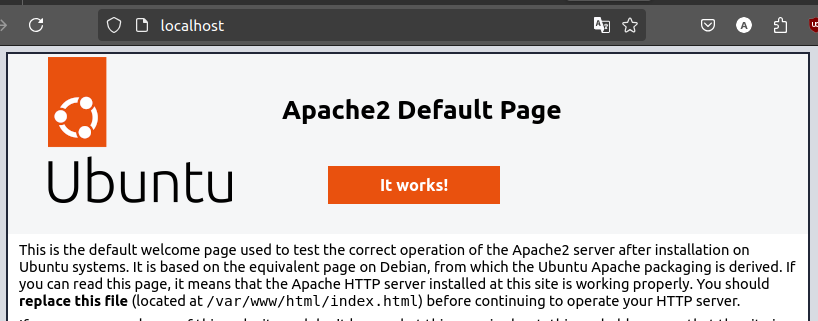
Instalasi MySQL
MySQL adalah sistem manajemen basis data relasional (RDBMS) open-source yang sangat populer dan digunakan oleh berbagai aplikasi untuk menyimpan dan mengelola data. MySQL memungkinkan pengguna untuk mengelola data dalam bentuk tabel yang saling terkait dan menyediakan query untuk manipulasi data dengan menggunakan bahasa SQL (Structured Query Language). MySQL banyak digunakan dalam pengembangan aplikasi berbasis web, termasuk pada platform seperti WordPress, Joomla, dan aplikasi berbasis PHP lainnya.
Langkah-Langkah Instalasi
1. Perbarui daftar paket
Sebelum menginstal MySQL pastikan sistem diperbarui. Gunakan perintah berikut pada terminal untuk memperbarui sistem:
sudo apt update && sudo apt upgrade -y
2. Install MySQL
Gunakan perintah berikut untuk menginstal MySQL:
sudo apt install mysql-server -y
Jika instalasi berhasil output baris terakhirnya akan seperti berikut :
mysqld is running as pid 90340
Created symlink /etc/systemd/system/multi-user.target.wants/mysql.service → /lib
/systemd/system/mysql.service.
Setting up mysql-server (8.0.40-0ubuntu0.22.04.1) ...
Processing triggers for man-db (2.10.2-1) ...
Processing triggers for libc-bin (2.35-0ubuntu3.8) ...
3. Verifikasi instalasi
Setelah instalasi selesai periksa status MySQL untuk memastikan layanan berjalan, gunakan perintah berikut:
sudo systemctl status mysql
Jika berhasil akan terlihat status active (running).
● mysql.service - MySQL Community Server
Loaded: loaded (/lib/systemd/system/mysql.service; enabled; vendor preset:>
Active: active (running) since Fri 2025-01-24 13:53:54 WITA; 1min 54s ago
Process: 90528 ExecStartPre=/usr/share/mysql/mysql-systemd-start pre (code=>
Main PID: 90536 (mysqld)
Status: "Server is operational"
4. Amankan Instalasi MySQL
Setelah MySQL terinstall, jalankan perintah pengamanan untuk meningkatkan keamanan database:
sudo mysql_secure_installation
Pada pengamanan database akan diminta : • Mengatur kata sandi untuk root • Menghapus pengguna anonim • Menonaktifkan akses root dari jarak jauh. • Menghapus database test. • Memuat ulang tabel hak istimewa. Setelah selesai mengamankan database maka akan terlihat output All done seperti berikut:
Reload privilege tables now? (Press y|Y for Yes, any other key for No) : y
Success.
All done!
5. Mengakses MySQL
Untuk masuk ke antarmuka MySQL, gunakan perintah berikut:
sudo mysql -u root -p
Masukkan kata sandi yang di atur selama proses pengamanan. Setelah berhasil masuk akan melihat prompt MySQL seperti berikut:
Enter password:
Welcome to the MySQL monitor. Commands end with ; or \g.
Your MySQL connection id is 10
Server version: 8.0.40-0ubuntu0.22.04.1 (Ubuntu)
Copyright (c) 2000, 2024, Oracle and/or its affiliates.
Oracle is a registered trademark of Oracle Corporation and/or its
affiliates. Other names may be trademarks of their respective
owners.
Type 'help;' or '\h' for help. Type '\c' to clear the current input statement.
mysql>
Instalasi Java
Java adalah bahasa pemrograman berorientasi objek yang banyak digunakan dalam pengembangan aplikasi berbasis desktop, web, dan mobile. Java dikenal karena portabilitasnya, yang memungkinkan aplikasi yang ditulis dalam Java dapat dijalankan di berbagai platform tanpa perlu modifikasi. Hal ini tercapai melalui prinsip "Write Once, Run Anywhere" (WORA) yang menjadi salah satu keunggulan utama dari Java.
Langkah-Langkah Instalasi
1. Periksa versi Java
Sebelum menginstall Java, periksa apakah sudah ada versi yang terpasang:
java --version
Jika outputnya menunjukkan versi java, maka java sudah terpasang. Namun jika belum terinstall maka outputnya akan seperti berikut:
bash: java: command not found
2. Perbarui daftar paket
Gunakan perintah berikut pada terminal untuk memperbarui paket:
sudo apt update && sudo apt upgrade -y
3. Install Java
Untuk menginstall java gunakan perintah berikut :
sudo apt install openjdk-21-jdk -y
Jika instalasi berhasil maka output baris terakhir akan seperti berikut:
Processing triggers for man-db (2.10.2-1) ...
Setting up libxdmcp-dev:amd64 (1:1.1.3-0ubuntu5) ...
Setting up libxcb1-dev:amd64 (1.14-3ubuntu3) ...
Setting up libx11-dev:amd64 (2:1.7.5-1ubuntu0.3) ...
Setting up libxt-dev:amd64 (1:1.2.1-1) ...
4. Verifikasi instalasi
Verifikasi instalasi dengan memeriksa versi java yang baru diinstall:
java --version
Outputnya akan menunjukkan versi java seperti berikut:
openjdk 21.0.5 2024-10-15
OpenJDK Runtime Environment (build 21.0.5+11-Ubuntu-1ubuntu122.04)
OpenJDK 64-Bit Server VM (build 21.0.5+11-Ubuntu-1ubuntu122.04, mixed mode, sharing)
Instalasi PHP
PHP (Hypertext Preprocessor) adalah bahasa pemrograman yang banyak digunakan untuk pengembangan web. PHP sering digunakan untuk membuat aplikasi berbasis web dinamis, seperti situs web, e-commerce, sistem manajemen konten (CMS), dan aplikasi web lainnya. Salah satu keunggulan PHP adalah kemampuannya untuk berintegrasi dengan berbagai database, seperti MySQL dan PostgreSQL, serta mendukung berbagai framework dan CMS seperti Laravel, WordPress, dan Drupal.
Langkah-Langkah Instalasi
1. Periksa versi PHP
Sebelum menginstall php, periksa apakah sudah ada versi yang terpasang:
php -v
Jika outputnya menunjukkan versi php, maka php sudah terpasang. Namun jika belum terinstall maka outputnya akan seperti berikut:
bash: php: command not found
2. Perbarui daftar paket
Gunakan perintah berikut pada terminal untuk memperbarui paket:
sudo apt update && sudo apt upgrade -y
3. Install PHP
Untuk menginstall php gunakan perintah berikut :
sudo apt install php libapache2-mod-php php-cli php-mysql -y
Jika instalasi berhasil maka output baris terakhir akan seperti berikut:
Setting up php8.3 (8.3.16-1+ubuntu22.04.1+deb.sury.org+1) ...
Setting up libapache2-mod-php (2:8.3+95+ubuntu22.04.1+deb.sury.org+1) ...
Setting up php (2:8.3+95+ubuntu22.04.1+deb.sury.org+1) ...
Processing triggers for man-db (2.10.2-1) ...
Processing triggers for php8.3-cli (8.3.16-1+ubuntu22.04.1+deb.sury.org+1) ...
Processing triggers for libapache2-mod-php8.3 (8.3.16-1+ubuntu22.04.1+deb.sury.org+1) ...
4. Verifikasi instalasi
Verifikasi instalasi dengan memeriksa versi php yang baru diinstall:
php -v
Outputnya akan menunjukkan versi php seperti berikut:
PHP 8.3.16 (cli) (built: Jan 19 2025 13:45:36) (NTS)
Copyright (c) The PHP Group
Zend Engine v4.3.16, Copyright (c) Zend Technologies
with Zend OPcache v8.3.16, Copyright (c), by Zend Technologies
Instalasi Composer
Composer adalah dependency manager untuk bahasa pemrograman PHP yang digunakan untuk mengelola pustaka dan dependensi dalam proyek PHP. Composer memungkinkan pengembang untuk mendeklarasikan pustaka yang diperlukan untuk proyek mereka, dan secara otomatis menangani pemasangan serta pembaruan pustaka-pustaka tersebut. Dengan Composer, pengelolaan dependensi dalam proyek PHP menjadi lebih mudah dan efisien. Composer juga mendukung integrasi dengan Packagist, yang merupakan repositori utama untuk pustaka PHP, sehingga memudahkan instalasi berbagai paket pihak ketiga yang diperlukan dalam pengembangan aplikasi.
Langkah-Langkah Instalasi
1. Memastikan PHP Terinstal
Sebelum menginstal Composer, pastikan PHP sudah terinstal di sistem dengan menjalankan perintah berikut:
php -v
Output akan menunjukkan versi PHP seperti berikut:
PHP 8.3.16 (cli) (built: Jan 19 2025 13:45:36) (NTS)
Copyright (c) The PHP Group
Zend Engine v4.3.16, Copyright (c) Zend Technologies
with Zend OPcache v8.3.16, Copyright (c), by Zend Technologies
Jika PHP belum terinstal ikuti langkah instalasi PHP terlebih dahulu.
2. Mengunduh dan Menginstal Composer
Gunakan perintah berikut untuk mengunduh dan menginstal Composer:
curl -sS https://getcomposer.org/installer | php
Setelah unduhan selesai outputnya akan seperti berikut:
All settings correct for using Composer
Downloading...
Composer (version 2.8.5) successfully installed to: /home/arie/composer.phar
Use it: php composer.phar
Jalankan perintah berikut untuk memindahkan Composer ke direktori yang dapat diakses secara global:
sudo mv composer.phar /usr/local/bin/composer
3. Memverifikasi Instalasi
Setelah Composer berhasil diinstal, verifikasi dengan menjalankan perintah:
composer -V
Jika instalasi berhasil akan terlihat output yang menunjukkan versi Composer yang terinstal seperti berikut:
Composer version 2.8.5 2025-01-21 15:23:40
PHP version 8.3.16 (/usr/bin/php8.3)
Instalasi WebGL
WebGL (Web Graphics Library) adalah API berbasis JavaScript yang digunakan untuk merender grafis 2D dan 3D interaktif di dalam browser web, tanpa memerlukan plugin tambahan. WebGL memanfaatkan kemampuan GPU (Graphics Processing Unit) melalui standar OpenGL ES.
Langkah-Langkah Instalasi
1. Pastikan dan Driver Terpasang
Jalankan perintah berikut untuk memeriksa driver GPU:
lspci -k | grep -A 2 -i "vga"
Berikut adalah output jika driver GPU terpasang:
5:00.0 VGA compatible controller: Advanced Micro Devices, Inc. [AMD/ATI] Picasso/Raven 2 [Radeon Vega Series / Radeon Vega Mobile Series] (rev c4)
Subsystem: Acer Incorporated [ALI] Picasso
Kernel driver in use: amdgpu
Jika belum terpasang, gunakan perintah berikut untuk memasang driver yang sesuai:
sudo ubuntu-drivers autoinstall
2. Verifikasi Dukungan WebGL
Buka browser (Chrome, Firefox, Brave, dll.) lalu akses halaman berikut untuk pengujian:
• https://get.webgl.org/
Jika WebGL aktif akan terlihat animasi 3D (seperti kubus berputar).

• https://webglreport.com/
Jika WebGL aktif akan terlihat laporan status lengkap WebGL dan WebGL2.
Instalasi Zotero
Zotero adalah perangkat lunak manajemen referensi open-source yang digunakan oleh peneliti, mahasiswa, dan akademisi untuk mengelola sumber referensi dalam penelitian. Dengan Zotero, pengguna dapat menyimpan, mengorganisir, mengutip, dan berbagi referensi dari berbagai sumber seperti jurnal akademik, buku, dan situs web. Zotero mendukung berbagai format sitasi seperti APA, MLA, Chicago, dan IEEE, serta dapat diintegrasikan dengan pengolah kata seperti LibreOffice, Microsoft Word, dan Google Docs.
Langkah-Langkah Instalasi
1. Buka Ubuntu Software
Untuk membuka ubuntu software dapat mengklik icon ubuntu software pada menu applications.

2. Cari Zotero
Klik icon search pada pojok kiri atas ubuntu software kemudian masukkan keyword "Zotero".
3. Install Zotero
Pilih software yang sesuai kemudian tekan tombol install.
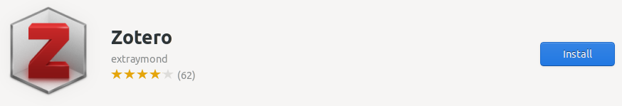
4. Verifikasi Instalasi
Tunggu hingga proses instalasi selesai, Zotero yang sudah terinstall dapat ditemukan pada menu Applications. Setelah selesai menginstall Zotero, ketika membuka software LibreOffice secara otomatis akan muncul jendela wizard untuk menambahkan extension zotero ke LibreOffice. Berikut adalah Zotero ketika berjalan di Ubuntu 22.04 LTS.

Instalasi Inkscape
Inkscape adalah perangkat lunak open-source untuk pengeditan grafis vektor yang sering digunakan dalam desain ilustrasi, logo, dan gambar berbasis vektor lainnya. Inkscape mendukung format file SVG (Scalable Vector Graphics) secara default, serta berbagai format lainnya seperti PDF, EPS, AI, dan PNG. Inkscape menjadi alternatif populer untuk perangkat lunak berbayar seperti CorellDraw karena fitur-fiturnya yang lengkap dan kemampuannya dalam mendukung berbagai jenis proyek desain grafis.
Langkah-Langkah Instalasi
1. Buka Ubuntu Software
Untuk membuka ubuntu software dapat mengklik icon ubuntu software pada menu applications.

2. Cari Inkscape
Klik icon search pada pojok kiri atas ubuntu software kemudian masukkan keyword "Inkscape".

3. Install Inkscape
Pilih software yang sesuai kemudian tekan tombol install.
4. Verifikasi Instalasi
Tunggu hingga proses instalasi selesai, Inkscape yang sudah terinstall dapat ditemukan pada menu Applications. Berikut adalah Inkscape ketika berjalan di Ubuntu 22.04 LTS.
Instalasi GIMP
GIMP (GNU Image Manipulation Program) adalah perangkat lunak pengedit gambar open-source yang dapat digunakan untuk berbagai keperluan, termasuk pengeditan foto, manipulasi gambar, pembuatan desain grafis, serta pembuatan ilustrasi digital. Sebagai alternatif gratis untuk Adobe Photoshop, GIMP menawarkan berbagai fitur canggih seperti layer, masking, filter, scripting, dan dukungan untuk berbagai format file gambar, termasuk PNG, JPEG, PSD, dan GIF.
Langkah-Langkah Instalasi
1. Buka Ubuntu Software
Untuk membuka ubuntu software dapat mengklik icon ubuntu software pada menu applications.

2. Cari GIMP
Klik icon search pada pojok kiri atas ubuntu software kemudian masukkan keyword "GIMP".

3. Install GIMP
Pilih software yang sesuai kemudian tekan tombol install.
4. Verifikasi Instalasi
Tunggu hingga proses instalasi selesai, Gimp yang sudah terinstall dapat ditemukan pada menu Applications. Berikut adalah GIMP ketika berjalan di Ubuntu 22.04 LTS.

Instalasi Open eLearning
Open eLearning adalah perangkat lunak open-source yang digunakan untuk membuat materi pembelajaran interaktif. Aplikasi ini memungkinkan pengguna untuk membuat kursus e-learning dengan animasi, kuis, video, dan elemen interaktif lainnya tanpa perlu memiliki keahlian pemrograman. Software ini sangat cocok bagi pendidik, trainer, dan pengembang konten pembelajaran yang ingin membuat materi edukasi secara efektif.
Langkah-Langkah Instalasi
1. Unduh File Instalasi Open eLearning
Kunjungi https://www.openelearning.org/download kemudian unduh file instalasi untuk sistem operasi Linux.
2. Install Open eLearning
Pada terminal masuk ke direktori tempat file instalasi open eLearning disimpan (biasanya terletak pada direktori Downloads), gunakan perintah berikut untuk berpindah direktori:
cd Downloads/
Berikut adalah output jika telah berpindah direktori:
arie@zeno:~/Downloads$
Kemudian gunakan perintah berikut untuk melakukan instalasi open eLearning:
sudo dpkg -i openelearning_1.7.0_amd64.deb
Jika instalasi berhasil output baris terakhirnya akan seperti berikut:
Preparing to unpack openelearning_1.7.0_amd64.deb ...
Unpacking openelearning (1.7.0) over (1.7.0) ...
Setting up openelearning (1.7.0) ...
Processing triggers for gnome-menus (3.36.0-1ubuntu3) ...
Processing triggers for mailcap (3.70+nmu1ubuntu1) ...
Processing triggers for desktop-file-utils (0.26-1ubuntu3) ...
3. Verifikasi Instalasi
Open eLearning yang sudah terinstall dapat ditemukan pada menu Applications. Berikut adalah Open eLearning ketika berjalan di Ubuntu 22.04 LTS.

Instalasi GNS3
Pendahuluan
GNS3 (Graphical Network Simulator 3) merupakan perangkat lunak yang memungkinkan simulasi jaringan komputer secara virtual tanpa memerlukan perangkat keras fisik. Perangkat lunak ini mendukung berbagai teknologi jaringan, seperti Cisco IOS, MikroTik, Juniper, dan perangkat lain yang kompatibel dengan virtualisasi.
1. Perbarui Daftar Paket
Sebelum memulai proses instalasi perbarui daftar paket sistem dengan menjalankan perintah berikut:
sudo apt update && sudo apt upgrade -y
2. Menambahkan Repository Resmi GNS3
Tambahkan repository resmi GNS3 untuk mendapatkan versi terbaru:
sudo add-apt-repository ppa:gns3/ppa -y
Kemudian perbarui kembali daftar paket:
sudo apt update
3. Menginstal GNS3 dan Dependensi
Jalankan perintah berikut untuk menginstal GNS3: sudo apt install gns3-gui gns3-server -y Jika jendela configure ubridge muncul pilih yes. Kemudian jika instalasi berhasil output baris terakhirnya akan seperti berikut:
Processing triggers for libglib2.0-0:amd64 (2.72.4-0ubuntu2.4) ...
Processing triggers for libglib2.0-0:i386 (2.72.4-0ubuntu2.4) ...
Processing triggers for libc-bin (2.35-0ubuntu3.9) ...
Processing triggers for man-db (2.10.2-1) ...
Setting up gns3-gui (2.2.53~jammy1) ...
4. Konfigurasi Izin Pengguna
Agar GNS3 dapat berjalan dengan optimal tambahkan pengguna ke grup berikut:
sudo usermod -aG ubridge $USER
sudo usermod -aG libvirt $USER
sudo usermod -aG kvm $USER
sudo usermod -aG wireshark $USER
Kemudian lakukan restart sistem agar perubahan diterapkan :
reboot
5. Install Dynamips
Jika ingin menggunakan Dynamips (Cisco Router Emulator) install dependensinya:
sudo apt install dynamips -y
6. Install Qemu
Jika ingin menggunakan appliance berbasis QEMU install paket qemu:
sudo apt install qemu-kvm qemu-utils libvirt-daemon-system virt-manager -y
7. Menjalankan GNS3
GNS3 yang sudah terinstall dapat ditemukan pada menu show applications atau dapat menggunakan perintah berikut pada terminal:
gns3
Pada saat pertama kali menjalankan GNS3 akan muncuk jendela wizard untuk konfigurasi server, pilih “run appliance on my local computer“ kemdian klik next.
Pada jendela selanjutnya biarkan tetap default kemudian klik Next sampai terdapat tulisan:
Connection to the local GNS3 server has been successful!
8. Menambahkan Appliance
Agar dapat menggunakan berbagai perangkat jaringan tambahan perlu menambahkan appliance ke dalam GNS3.
Menambahkan Appliance dengan KVM/QEMU.
-
Unduh appliance/perangkat
Unduh appliance/perangkat yang ingin ditambakan dalam bentuk image file, berikut merupakan link untuk mengunduh appliance (dalam kasus ini router cisco 2600) :
[GNS3 Appliances](https://software.cisco.com/download/) -
Import Aplliance File
Klik file pada menu pojok kiri atas kemudian pilih new tamplate.
Selanjutnya pilih Install an appliance from the GNS3 server (recommendation).

Kemudian jendela selanjutnya akan menampilkan daftar perangkat yang dapat ditambahkan (Firewalls, Guests, Routers dan Switches). Pilih perangkat yang akan di install (pada kasus ini Router Cisco 1700) kemudian klik install.
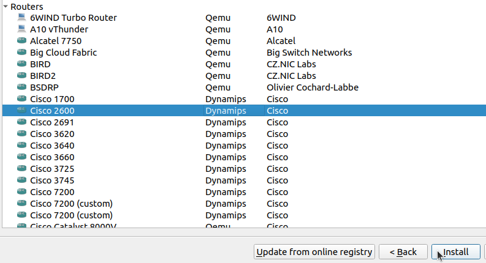
Selanjutnya jika file appliance sudah di unduh sebelumnya maka statusnya akan Ready to install.
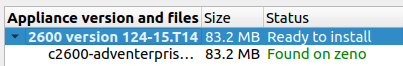
Kemudian klik next sampai terdapat pemberitahuan bahwa appliance telah berhasil di install.

-
Verifikasi Instalasi
Jika appliance berhasil di install maka pada menu appliance kategori router akan terdapat appliance yang baru saja ditambahkan.
-
Uji Coba Perangkat
Tambahkan 1 buah router cisco 2600 dan 2 VPCS kedalam workspace kemudian koneksikan setiap VPCS dengan router :
• PC 1 > ethernet 0/0
• PC 2 > ethernet 1/0
Kemudian klik kanan pada router lalu pilih console untuk menambahkan konfigurasi. Berikut konfigurasi untuk router cisco 2600 :
• Masuk mode konfigurasi
enable configure terminalJika berhasil maka outputnya akan seperti berikut :
Enter configuration commands, one per line. End with CNTL/Z. R1(config)#• Konfigurasi FastEthernet0/0 (PC 1)
interface FastEthernet0/0 ip address 192.168.1.1 255.255.255.0 no shutdown exitJika berasil maka outputnya akan seperti berikut :
*Mar 1 00:14:26.404: %LINK-3-UPDOWN: Interface Ethernet0/0, changed state to up *Mar 1 00:14:27.405: %LINEPROTO-5-UPDOWN: Line protocol on Interface Ethernet0/0, changed state to up• Konfigurasi FastEthernet0/1 (PC 2)
interface FastEthernet0/0 ip address 192.168.2.1 255.255.255.0 no shutdown exitJika berhasil maka outputnya akan seperti berikut :
*Mar 1 00:20:21.097: %LINK-3-UPDOWN: Interface Ethernet1/0, changed state to up *Mar 1 00:20:22.099: %LINEPROTO-5-UPDOWN: Line protocol on Interface Ethernet1/0, changed state to up• Simpan Konfigurasi
exit write memory Berikut adalah output setelah menyimpan konfigurasi : Overwrite the previous NVRAM configuration?[confirm] Building configuration… [OK]• Konfigurasi VPCS
Pada console PC 1 atur IP dengan :ip 192.168.1.2 255.255.255.0 192.168.1.1PC 2 :
ip 192.168.2.2 255.255.255.0 192.168.2.1• Uji Koneksi
Ping dari PC 1 ke PC 2 :PC1> ping 192.168.2.2 84 bytes from 192.168.2.2 icmp_seq=1 ttl=63 time=12.978 ms 84 bytes from 192.168.2.2 icmp_seq=2 ttl=63 time=15.709 ms 84 bytes from 192.168.2.2 icmp_seq=3 ttl=63 time=16.068 ms 84 bytes from 192.168.2.2 icmp_seq=4 ttl=63 time=15.385 ms 84 bytes from 192.168.2.2 icmp_seq=5 ttl=63 time=16.071 msJika outputnya seperti diatas maka konfigurasi telah berhasil diterapkan.
Menambahkan Appliance dengan VirtualBox
-
Unduh appliance/perangkat
Unduh file appliance/perangkat jaringan yang ingin di install (dalam kasus ini router mikrotik CHR). Kunjungi laman https://mikrotik.com/download kemudian unduh file OVA template.
-
Import Aplliance File
Pada VirtualBox klik file kemudian pilih import appliance.
Selanjutnya pada kolom source file pilih file mikrotik yang baru saja di downlod dengan ekstensi .OVA. Kemudian pada pilihan setting dapat mengganti nama appliance dengan Mikrotik CHR.

Klik finish kemudian jika import berhasil maka appliance Mikrotik CHR akan ditambahkan.
-
Mengubungkan VirtualBox Appliance dengan GNS3
Pada GNS3 pilih menu edit kemudian preferences. Selanjutnya pada menu VirtualBox VMs klik new kemudian pada pilihan VM List pilih nama machine router yang di install pada virtualBox kemudian klik finish.
Setelah berhasil menambahkan maka router akan ada pada list VirtualBox VMs Template.

Klik edit pada template tersebut kemudian pilih kategorinya sebagai router.
Menambahkan Appliance dengan VMWare
-
Unduh appliance/perangkat
Unduh file appliance/perangkat jaringan yang ingin di install (dalam kasus ini router mikrotik CHR). Kunjungi laman https://mikrotik.com/download kemudian unduh file OVA template. -
Import Aplliance File
Pada VMWare klik menu file kemudian open dan pilih file .OVA.
Pada jendela selanjutnya sesuaikan nama appliance kemudian klik import.

Klik finish kemudian jika import berhasil maka appliance Mikrotik CHR akan ditambahkan.
-
Mengubungkan VirtualBox Appliance dengan GNS3
Pada GNS3 pilih menu edit kemudian preferences. Selanjutnya pada menu VMWare VMs klik new kemudian pada pilihan VM List pilih nama appliance yang di sudah diimport lalu klik finish.
Setelah berhasil menambahkan maka router akan ada pada list VMWare VMs Template.
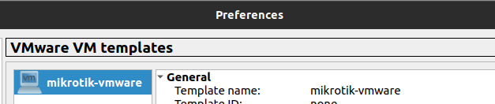
Klik edit pada template tersebut kemudian pilih kategorinya sebagai router.
9. Membuat Simulasi Sederhana (Mikrotik CHR)
Berikut adalah topologi jaringan sederhana yang akan dibuat.

-
Menambahkan device
Untuk menambahkan device dapat dengan melakukan drag device yang tersedia ke ruang kerja kemudian hubungkan tiap device dengan link ke port yang tersedia.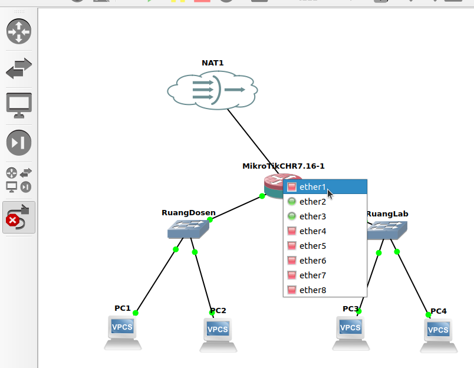
Disini untuk port 1 (ether1) mikrotik tersambung ke internet, port 2 dan port 3 masing-masing terhubung ke switch. Setelah semua device terhubung jalankan semua device dengan mengklik icon start pada menu bagian atas.
-
Konfigurasi Mikrotik dengan Winbox
Buka aplikasi winbox yang terinstall pada laptop kemudian klik mac address / ip address yang muncul. Login dengan user defatl mikrotik yaitu user : admin dan passwordnya kosong.
-
Konfigurasi IP
Pada winbox, klik menu ip > address. Secara otomatis port 1 akan mendapat ip dari internet karena terhubung dengan NAT pada port 1.
- Port 2 : 192.168.2.1/24

- Port 3 : 192.168.3.1/24

- Port 2 : 192.168.2.1/24
-
Menambahkan DHCP Server
Pada winbox pilih ip > dhcp server. Kemudian klik DHCP Setup, pada jendela selanjutnya pilih interface yang akan dijadikan DHCP Server, disini yang pertama adalah ether 2.
Selanjutnya biarkan secara default. Untuk range ip yang di berikan bisa dimodifikasi pada jendela selanjutnya. Untuk DNS server isi dengan 8.8.8.8. Klik next sampai terdapat pemberitahuan “setup has completed successfully”.
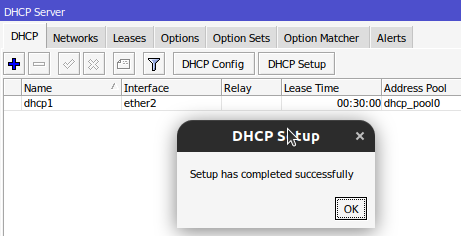
Kemudian dengan cara yang sama lakukan untuk ether 3.
-
Cek IP client
Pada semua VPCS buka console dengan cara klik kanan > console, pada console masukkan perintah :dhcpPerintah dhcp digunakan agar pc menerima ip dari dhcp server. Kemudian untuk melihat konfigurasi dhcp yang diterima gunakan perintah berikut :
show ipBerikut output untuk PC1 :
NAME : PC1[1] IP/MASK : 192.168.2.254/24 GATEWAY : 192.168.2.1 DNS : 192.168.122.1 DHCP SERVER : 192.168.2.1 DHCP LEASE : 1650, 1800/900/1575 MAC : 00:50:79:66:68:00 LPORT : 10014 RHOST:PORT : 127.0.0.1:10015 MTU : 1500 Output untuk PC 4 : NAME : PC4[1] IP/MASK : 192.168.3.253/24 GATEWAY : 192.168.3.1 DNS : 8.8.8.8 DHCP SERVER : 192.168.3.1 DHCP LEASE : 1614, 1800/900/1575 MAC : 00:50:79:66:68:03 LPORT : 10036 RHOST:PORT : 127.0.0.1:10037 MTU : 1500Hal ini menunjukan bahwa konfigurasi DHCP Server telah berhasil. Kemudian juga dapa menguji koneksi dengan mengubungi PC dengan DHCP Server yang berbeda, contoh PC4 menghubungi PC1 dengan cara ping:
PC4> ping 192.168.2.254 84 bytes from 192.168.2.254 icmp_seq=1 ttl=63 time=3.874 ms 84 bytes from 192.168.2.254 icmp_seq=2 ttl=63 time=2.473 ms 84 bytes from 192.168.2.254 icmp_seq=3 ttl=63 time=0.863 ms 84 bytes from 192.168.2.254 icmp_seq=4 ttl=63 time=1.328 ms 84 bytes from 192.168.2.254 icmp_seq=5 ttl=63 time=1.230 ms -
Konfigurasi IP Firewal
Agar PC dapat terhubung ke internet maka perlu konfigurasi IP Firewal. Pada winbox pilih ip > firewal kemudian klik kolom NAT dan tambah rules baru dengan mengklik icon +.
Selanjut pada tab Action ubah menjadi “masquerade” kemudian klik ok.
ji koneksi dengan ping ke 8.8.8.8.
C4> ping 8.8.8.8 4 bytes from 172.217.194.102 icmp_seq=1 ttl=57 time=47.240 ms 4 bytes from 172.217.194.102 icmp_seq=2 ttl=57 time=78.903 ms 4 bytes from 172.217.194.102 icmp_seq=3 ttl=57 time=44.574 ms 4 bytes from 172.217.194.102 icmp_seq=4 ttl=57 time=61.156 ms 4 bytes from 172.217.194.102 icmp_seq=5 ttl=57 time=46.509 msJika outputnya seperti diatas maka PC sudah dapat terkoneksi dengan internet.
Instalasi Google Chrome
Google Chrome merupakan salah satu peramban (browser) modern yang dikembangkan oleh Google dan banyak digunakan dalam dunia pendidikan, riset, serta pengembangan perangkat lunak karena mendukung berbagai fitur web terbaru dan memiliki ekosistem ekstensi yang luas.
Langkah-Langkah Instalasi
1. Unduh File Instalasi Google Chrome
Kunjungi https://www.google.com/chrome/?platform=linux kemudian unduh file instalasi untuk sistem operasi ubuntu.
2. Install Google Chrome
Pada terminal masuk ke direktori tempat file instalasi google chrome disimpan (biasanya terletak pada direktori Downloads), gunakan perintah berikut untuk berpindah direktori:
cd Downloads/
Berikut adalah output jika telah berpindah direktori:
arie@zeno:~/Downloads$
Kemudian gunakan perintah berikut untuk melakukan instalasi goole chrome:
sudo dpkg -i google-chrome-stable_current_amd64.deb
Jika instalasi berhasil outputnya akan seperti berikut:
Selecting previously unselected package google-chrome-stable.
(Reading database ... 356731 files and directories currently installed.)
Preparing to unpack google-chrome-stable_current_amd64.deb ...
Unpacking google-chrome-stable (135.0.7049.84-1) ...
Setting up google-chrome-stable (135.0.7049.84-1) ...
3. Verifikasi Instalasi
Google Chrome yang sudah terinstall dapat ditemukan pada menu Applications. Berikut adalah Google Chrome ketika berjalan di Ubuntu 22.04 LTS.

Instalasi Darktable
Darktable adalah aplikasi open-source untuk pengeditan dan pengelolaan foto, terutama difokuskan pada file RAW dari kamera digital. Darktable bekerja seperti virtual lighttable dan darkroom, memungkinkan fotografer melakukan pengolahan gambar non-destruktif, mulai dari penyesuaian eksposur, kontras, warna, hingga retouching lanjutan. Aplikasi ini sangat populer di kalangan fotografer profesional sebagai alternatif gratis untuk Adobe Lightroom.
Langkah-Langkah Instalasi
1. Buka Ubuntu Software
Untuk membuka ubuntu software dapat mengklik icon ubuntu software pada menu applications.

2. Cari Darktable
Klik icon search pada pojok kiri atas ubuntu software kemudian masukkan keyword "Darktable".

3. Install Darktable
Pilih software yang sesuai kemudian tekan tombol install.

4. Verifikasi Instalasi
Tunggu hingga proses instalasi selesai, Darktable yang sudah terinstall dapat ditemukan pada menu Applications. Berikut adalah Darktable ketika berjalan di Ubuntu 22.04 LTS.
Instalasi Quran Companion
Quran Companion adalah perangkat lunak open source yang digunakan untuk membaca dan mendengarkan Al-Qur'an.## Langkah-Langkah Instalasi
1. Buka Ubuntu Software
Untuk membuka ubuntu software dapat mengklik icon ubuntu software pada menu applications.

2. Cari Quran Companion
Klik icon search pada pojok kiri atas ubuntu software kemudian masukkan keyword "Quran Companion".
3. Install Quran Companion
Pilih software yang sesuai kemudian tekan tombol install.

4. Verifikasi Instalasi
Tunggu hingga proses instalasi selesai, Quran Companion yang sudah terinstall dapat ditemukan pada menu Applications. Berikut adalah Quran Companion ketika berjalan di Ubuntu 22.04 LTS.

Instalasi Sagemath
SagSageMath adalah perangkat lunak open-source untuk komputasi matematika yang mencakup aljabar, kalkulus, teori bilangan, statistik, kriptografi, dan lainnya. SageMath mengintegrasikan berbagai pustaka matematika populer seperti NumPy, SciPy, Matplotlib, SymPy, Maxima, dan banyak lagi, dalam satu antarmuka terpadu berbasis Python.
Langkah-Langkah Instalasi
1. Buka Ubuntu Software
Untuk membuka ubuntu software dapat mengklik icon ubuntu software pada menu applications.

2. Cari Sagemath
Klik icon search pada pojok kiri atas ubuntu software kemudian masukkan keyword "Sagemath".
3. Install Sagemath
Pilih software yang sesuai kemudian tekan tombol install.

4. Verifikasi Instalasi
Tunggu hingga proses instalasi selesai, Sagemath yang sudah terinstall dapat ditemukan pada menu Applications. Berikut adalah Sagemath ketika berjalan di Ubuntu 22.04 LTS.

Instalasi PSPP
PSPP adalah perangkat lunak statistik bebas dan sumber terbuka yang digunakan untuk analisis statistik data kuantitatif. PSPP dirancang sebagai alternatif dari IBM SPSS, dan mendukung berbagai teknik analisis statistik seperti uji t, ANOVA, regresi linear, dan analisis non-parametrik. Dengan antarmuka grafis yang intuitif, PSPP sangat cocok digunakan dalam lingkungan akademik untuk kebutuhan penelitian dan analisis data.
Langkah-Langkah Instalasi
1. Buka Ubuntu Software
Untuk membuka ubuntu software dapat mengklik icon ubuntu software pada menu applications.

2. Cari PSPP
Klik icon search pada pojok kiri atas ubuntu software kemudian masukkan keyword "PSPP".
3. Install PSPP
Pilih software yang sesuai kemudian tekan tombol install.

4. Verifikasi Instalasi
Tunggu hingga proses instalasi selesai, PSPP yang sudah terinstall dapat ditemukan pada menu Applications. Berikut adalah PSPP ketika berjalan di Ubuntu 22.04 LTS.
Instalasi SimPHY
simPHY adalah aplikasi simulasi interaktif berbasis Java yang digunakan untuk membantu pembelajaran fisika secara visual. Aplikasi ini menyediakan berbagai eksperimen fisika dalam bentuk simulasi yang dapat dimanipulasi pengguna, seperti hukum Newton, gerak proyektil, medan listrik, dan lainnya. Dengan tampilan yang intuitif dan pendekatan berbasis eksperimen, simPHY sangat bermanfaat bagi siswa dan mahasiswa dalam memahami konsep-konsep fisika secara praktis.
Langkah-Langkah Instalasi
1. Unduh File Instalasi SimPHY
Kunjungi https://simphy.com/downloads kemudian unduh file instalasi untuk sistem operasi Linux.

2. Ekstrak File ZIP SimPHY
Karena file instalasi SimPHY berekstensi ZIP, maka perlu di ekstrak terlebih dahulu. Pada terminal masuk ke direktori tempat file instalasi SimPHY disimpan (biasanya terletak pada direktori Downloads), gunakan perintah berikut untuk berpindah direktori:
cd Downloads/
Berikut adalah output jika telah berpindah direktori:
arie@zeno:~/Downloads$
Kemudian gunakan perintah berikut untuk melakukan ekstraksi file ZIP:
unzip SimPHY-2.0-linux64.zip -d ~/.local/share/
Jika unzip berhasil akan ada output seperti berikut pada baris terakhir.
iinflating: /home/arie/.local/share/SimPHY-1.6-linux64/simphy.jar
inflating: /home/arie/.local/share/SimPHY-1.6-linux64/exp4j-0.4.8.jar
inflating: /home/arie/.local/share/SimPHY-1.6-linux64/Logging.html
inflating: /home/arie/.local/share/__MACOSX/SimPHY-1.6-linux64/._Logging.html
inflating: /home/arie/.local/share/__MACOSX/._SimPHY-1.6-linux64
3. Buat Shortcut Menu
Agar lebih praktis SimPHY dapat ditambahkan ke menu aplikasi sehingga untuk mengaksesnya dapat langsung mengklik ikon Winbox pada menu aplikasi. Gunakan perintah berikut untuk membuat file simphy.desktop sekaligus mengedit isi filenya:
nano ~/.local/share/applications/simphy.desktop
Kemudian isi dengan script berikut:
[Desktop Entry]
Name=SimPHY
Exec=/home/arie/.local/share/SimPHY-1.6-linux64/simphy
Icon=application
Type=Application
Categories=Network;
4. Verifikasi Instalasi
SimPHY yang sudah terinstall dapat ditemukan pada menu Applications. Berikut adalah SimPHY ketika berjalan di Ubuntu 22.04 LTS.

Instalasi Postman
Postman adalah aplikasi API client yang digunakan untuk mengembangkan, menguji, dan mendokumentasikan Application Programming Interface (API). Postman mendukung berbagai metode HTTP (GET, POST, PUT, DELETE, dll.) dan dilengkapi fitur seperti koleksi, environment, test scripting, serta integrasi dengan CI/CD. Postman banyak digunakan oleh pengembang backend, frontend, dan QA untuk keperluan debugging serta otomasi pengujian API.
Langkah-Langkah Instalasi
1. Buka Ubuntu Software
Untuk membuka ubuntu software dapat mengklik icon ubuntu software pada menu applications.

2. Cari Postman
Klik icon search pada pojok kiri atas ubuntu software kemudian masukkan keyword "Postman".
3. Install Postman
Pilih software yang sesuai kemudian tekan tombol install.

4. Verifikasi Instalasi
Tunggu hingga proses instalasi selesai, Postman yang sudah terinstall dapat ditemukan pada menu Applications. Berikut adalah Postman ketika berjalan di Ubuntu 22.04 LTS.

Instalasi JupyterLab
JupyterLab adalah antarmuka berbasis web generasi terbaru dari Jupyter Notebook yang digunakan untuk membuat dan menjalankan kode Python secara interaktif. JupyterLab mendukung visualisasi data, integrasi terminal, teks Markdown, serta eksekusi skrip Python atau bahasa pemrograman lain melalui kernel. JupyterLab sangat cocok untuk pengembangan data science, machine learning, serta eksperimen berbasis notebook interaktif.
Langkah-Langkah Instalasi
1. Buka Ubuntu Software
Untuk membuka ubuntu software dapat mengklik icon ubuntu software pada menu applications.

2. Cari JupyterLab
Klik icon search pada pojok kiri atas ubuntu software kemudian masukkan keyword "JupyterLab".

3. Install JupyterLab
Pilih software yang sesuai kemudian tekan tombol install.
4. Verifikasi Instalasi
Tunggu hingga proses instalasi selesai, JupyterLab yang sudah terinstall dapat ditemukan pada menu Applications. Berikut adalah JupyterLab ketika berjalan di Ubuntu 22.04 LTS.

Instalasi LibreOffice
LibreOffice adalah perangkat lunak perkantoran sumber terbuka yang dikembangkan oleh The Document Foundation. Aplikasi ini mencakup berbagai program penting seperti Writer (pengolah kata), Calc (spreadsheet), Impress (presentasi) dan lainnya. Berdasarkan dokumentasinya LibreOffice sepenuhnya kompatibel dengan format dokumen umum seperti .docx, .xlsx dan .pptx.
Langkah-Langkah Instalasi
1. Buka Ubuntu Software
Untuk membuka ubuntu software dapat mengklik icon ubuntu software pada menu applications.

2. Cari LibreOffice
Klik icon search pada pojok kiri atas ubuntu software kemudian masukkan keyword "LibreOffice".

3. Install LibreOffice
Pilih software yang sesuai kemudian tekan tombol install.

4. Verifikasi Instalasi
Tunggu hingga proses instalasi selesai, LibreOffice yang sudah terinstall dapat ditemukan pada menu Applications. Terdapat 4 perangkat lunak yang terinstall yaitu LibreOffice Writer, LibreOffice Calc, LibreOffice Impress, dan LibreOffice Math. Berikut adalah LibreOffice ketika berjalan di Ubuntu 22.04 LTS.

Instalasi Firefox
Mozilla Firefox adalah peramban web open-source yang dikembangkan oleh Mozilla Foundation. Firefox dikenal dengan komitmennya terhadap standar web terbuka, perlindungan privasi, dan kustomisasi antarmuka.
Langkah-Langkah Instalasi
1. Buka Ubuntu Software
Untuk membuka ubuntu software dapat mengklik icon ubuntu software pada menu applications.

2. Cari Firefox
Klik icon search pada pojok kiri atas ubuntu software kemudian masukkan keyword "Firefox".
3. Install Firefox
Pilih software yang sesuai kemudian tekan tombol install.

4. Verifikasi Instalasi
Tunggu hingga proses instalasi selesai, Firefox yang sudah terinstall dapat ditemukan pada menu Applications. Berikut adalah Firefox ketika berjalan di Ubuntu 22.04 LTS.
Instalasi PDFSam Basic
PDFsam adalah aplikasi sumber terbuka yang memungkinkan pengguna untuk membagi, menggabungkan, dan memutar file PDF tanpa biaya. Aplikasi ini berguna dalam dunia pendidikan untuk mengelola materi ajar, tugas kuliah dan dokumen administratif secara efisien. PDFsam berbasis Java sehingga dapat dijalankan di berbagai sistem operasi termasuk Ubuntu Linux.
Langkah-Langkah Instalasi
1. Buka Ubuntu Software
Untuk membuka ubuntu software dapat mengklik icon ubuntu software pada menu applications.

2. Cari PDFSam Basic
Klik icon search pada pojok kiri atas ubuntu software kemudian masukkan keyword "PDFSam Basic".

3. Install PDFSam Basic
Pilih software yang sesuai kemudian tekan tombol install.
4. Verifikasi Instalasi
Tunggu hingga proses instalasi selesai, PDFSam Basic yang sudah terinstall dapat ditemukan pada menu Applications. Berikut adalah PDFSam Basic ketika berjalan di Ubuntu 22.04 LTS.

Instalasi Totem
Totem, atau yang dikenal sebagai GNOME Videos, adalah pemutar media bawaan lingkungan desktop GNOME yang umum digunakan di distribusi Linux seperti Ubuntu. Totem mendukung berbagai format video dan audio berkat integrasi dengan GStreamer, serta menawarkan antarmuka yang sederhana namun fungsional. Fitur-fitur yang ditawarkan termasuk pemutaran video lokal, subtitle, integrasi dengan YouTube, dan kontrol melalui keyboard atau remote.
Langkah-Langkah Instalasi
1. Buka Ubuntu Software
Untuk membuka ubuntu software dapat mengklik icon ubuntu software pada menu applications.

2. Cari Totem
Klik icon search pada pojok kiri atas ubuntu software kemudian masukkan keyword "Totem".

3. Install Totem
Pilih software yang sesuai kemudian tekan tombol install.

4. Verifikasi Instalasi
Tunggu hingga proses instalasi selesai, Totem yang sudah terinstall dapat ditemukan pada menu Applications. Berikut adalah Totem ketika berjalan di Ubuntu 22.04 LTS.

Instalasi Calibre
Calibre adalah aplikasi manajemen eBook lintas platform yang digunakan untuk membaca, mengatur, mengonversi, dan mentransfer koleksi buku digital. Calibre mendukung berbagai format eBook seperti EPUB, MOBI, AZW3, PDF, dan lainnya. Aplikasi ini dilengkapi dengan fitur-fitur seperti editor metadata, pengonversi format, pembaca eBook terintegrasi, sinkronisasi ke perangkat eReader, dan server eBook lokal. Calibre sangat populer di kalangan pelajar, akademisi, dan penggemar literatur digital.
Langkah-Langkah Instalasi
1. Buka Ubuntu Software
Untuk membuka ubuntu software dapat mengklik icon ubuntu software pada menu applications.

2. Cari Calibre
Klik icon search pada pojok kiri atas ubuntu software kemudian masukkan keyword "Calibre".

3. Install Calibre
Pilih software yang sesuai kemudian tekan tombol install.
4. Verifikasi Instalasi
Tunggu hingga proses instalasi selesai, Calibre yang sudah terinstall dapat ditemukan pada menu Applications. Berikut adalah Calibre ketika berjalan di Ubuntu 22.04 LTS.

Instalasi PeaZip
PeaZip adalah perangkat lunak manajemen arsip (archive manager) lintas platform yang mendukung lebih dari 180 format file termasuk ZIP, RAR, TAR, 7Z dan lainnya. PeaZip bersifat open-source dan memiliki antarmuka grafis (GUI) yang intuitif.
Langkah-Langkah Instalasi
1. Unduh File Instalasi PeaZip
Kunjungi https://peazip.github.io/peazip-linux.html kemudian unduh file instalasi untuk sistem operasi ubuntu.

2. Install PeaZip
Pada terminal masuk ke direktori tempat file instalasi visual studio code disimpan (biasanya terletak pada direktori Downloads), gunakan perintah berikut untuk berpindah direktori:
cd Downloads/
Berikut adalah output jika telah berpindah direktori:
arie@zeno:~/Downloads$
Kemudian gunakan perintah berikut untuk melakukan instalasi PeaZip:
sudo dpkg -i peazip_10.3.0.LINUX.GTK2-1_amd64.deb
Jika instalasi berhasil outputnya akan seperti berikut:
Selecting previously unselected package peazip.
(Reading database ... 356979 files and directories currently installed.)
Preparing to unpack peazip_10.3.0.LINUX.GTK2-1_amd64.deb ...
Unpacking peazip (10.3.0) ...
Setting up peazip (10.3.0) ...
3. Verifikasi Instalasi
PeaZip yang sudah terinstall dapat ditemukan pada menu Applications. PeaZip yang sudah terinstall juga dapat dijalankan dengan perintah berikut pada terminal:
peazip
Kemudian jendela PeaZip akan muncul. Berikut adalah PeaZip ketika berjalan pada Ubuntu 22.04 LTS.
Instalasi Zoom
Zoom adalah platform komunikasi video populer yang mendukung pertemuan daring, webinar dan konferensi. Zoom sangat banyak digunakan dalam lingkungan pendidikan termasuk pembelajaran jarak jauh, kuliah online, serta presentasi skripsi. Ketersediaan aplikasi Zoom untuk Linux termasuk Ubuntu memungkinkan pengguna di platform ini tetap dapat mengikuti kegiatan akademik secara penuh.
Langkah-Langkah Instalasi
1. Buka Ubuntu Software
Untuk membuka ubuntu software dapat mengklik icon ubuntu software pada menu applications.

2. Cari Zoom
Klik icon search pada pojok kiri atas ubuntu software kemudian masukkan keyword "Zoom".
3. Install Zoom
Pilih software yang sesuai kemudian tekan tombol install.

4. Verifikasi Instalasi
Tunggu hingga proses instalasi selesai, Zoom yang sudah terinstall dapat ditemukan pada menu Applications. Berikut adalah Zoom ketika berjalan di Ubuntu 22.04 LTS.

Instalasi Free Download Manager
Free Download Manager adalah platform komunikasi video populer yang mendukung pertemuan daring, webinar dan konferensi. Free Download Manager sangat banyak digunakan dalam lingkungan pendidikan termasuk pembelajaran jarak jauh, kuliah online, serta presentasi skripsi. Ketersediaan aplikasi Free Download Manager untuk Linux termasuk Ubuntu memungkinkan pengguna di platform ini tetap dapat mengikuti kegiatan akademik secara penuh.
Langkah-Langkah Instalasi
1. Unduh File Instalasi Free Download Manager
Kunjungi https://www.freedownloadmanager.org/ kemudian unduh file instalasi untuk sistem operasi Linux.
2. Install Free Download Manager
Pada terminal masuk ke direktori tempat file instalasi visual studio code disimpan (biasanya terletak pada direktori Downloads), gunakan perintah berikut untuk berpindah direktori:
cd Downloads/
Berikut adalah output jika telah berpindah direktori:
arie@zeno:~/Downloads$
Kemudian gunakan perintah berikut untuk melakukan instalasi free download manager:
sudo dpkg -i freedownloadmanager.deb
Jika instalasi berhasil outputnya akan seperti berikut:
Selecting previously unselected package freedownloadmanager.
(Reading database ... 357497 files and directories currently installed.)
Preparing to unpack freedownloadmanager.deb ...
Unpacking freedownloadmanager (6.26.2.6190) ...
Setting up freedownloadmanager (6.26.2.6190) ...
3. Verifikasi Instalasi
Free Download Manager yang sudah terinstall dapat ditemukan pada menu Applications. Berikut adalah Free Download Manager ketika berjalan di Ubuntu 22.04 LTS.

Instalasi Git
Git adalah sistem kontrol versi terdistribusi yang digunakan secara luas dalam pengembangan perangkat lunak untuk melacak perubahan kode sumber selama pengembangan. Git memungkinkan kolaborasi, manajemen revisi, serta integrasi dengan layanan hosting seperti GitHub, GitLab, dan Bitbucket. Git juga mendukung branching, merging, dan pemantauan histori perubahan secara efisien, sehingga menjadi alat penting dalam pengembangan perangkat lunak modern, baik individual maupun tim.
Langkah-Langkah Instalasi
1. Perbarui Sistem
Sebelum melakukan instalasi pastikan sistem Ubuntu dalam keadaan terbaru dengan memperbarui daftar paket terlebih dahulu, pada terminal gunakan perintah berikut:
sudo apt update && sudo apt upgrade -y
2. Install Git
Gunakan perintah berikut untuk menginstal Python:
sudo apt install git -y
Jika instalasi berhasil outputnya akan seperti berikut :
Unpacking git (1:2.43.0-1ubuntu7.2) ...
Setting up liberror-perl (0.17029-2) ...
Setting up git-man (1:2.43.0-1ubuntu7.2) ...
Setting up git (1:2.43.0-1ubuntu7.2) ...
Processing triggers for man-db (2.12.0-4build2) ...
3. Verifikasi instalasi
Verifikasi instalasi dengan memeriksa versi git yang baru dipasang
git --version
Jika berhasil dipasang outputnya akan seperti berikut:
git version 2.34.1
Instalasi NetBeans
NetBeans adalah lingkungan pengembangan terintegrasi (IDE) sumber terbuka yang digunakan untuk menulis, mengedit, dan menjalankan program dalam berbagai bahasa pemrograman seperti Java, PHP, HTML, C/C++, dan lainnya. NetBeans menyediakan fitur seperti editor cerdas, debugger, integrasi dengan sistem kontrol versi (seperti Git), serta dukungan proyek berbasis Maven dan Gradle, menjadikannya salah satu IDE yang cocok untuk pengembangan aplikasi desktop, web, dan mobile.
Langkah-Langkah Instalasi
1. Buka Ubuntu Software
Untuk membuka ubuntu software dapat mengklik icon ubuntu software pada menu applications.

2. Cari NetBeans
Klik icon search pada pojok kiri atas ubuntu software kemudian masukkan keyword "NetBeans".

3. Install NetBeans
Pilih software yang sesuai kemudian tekan tombol install.
4. Verifikasi Instalasi
Tunggu hingga proses instalasi selesai, NetBeans yang sudah terinstall dapat ditemukan pada menu Applications. Berikut adalah NetBeans ketika berjalan di Ubuntu 22.04 LTS.
Instalasi WxMaxima
wxMaxima adalah antarmuka grafis berbasis wxWidgets untuk Maxima, sebuah sistem aljabar komputer (Computer Algebra System/CAS) yang digunakan untuk melakukan perhitungan simbolik dan numerik. wxMaxima mempermudah pengguna dalam menggunakan Maxima melalui antarmuka GUI, yang mendukung input persamaan, tampilan hasil dalam bentuk matematis, grafik 2D/3D, serta kemampuan scripting. Aplikasi ini sangat cocok digunakan untuk pembelajaran matematika, kalkulus, aljabar, hingga komputasi teknik.
Langkah-Langkah Instalasi
1. Buka Ubuntu Software
Untuk membuka ubuntu software dapat mengklik icon ubuntu software pada menu applications.

2. Cari WxMaxima
Klik icon search pada pojok kiri atas ubuntu software kemudian masukkan keyword "WxMaxima".
3. Install WxMaxima
Pilih software yang sesuai kemudian tekan tombol install.
4. Verifikasi Instalasi
Tunggu hingga proses instalasi selesai, WxMaxima yang sudah terinstall dapat ditemukan pada menu Applications. Berikut adalah WxMaxima ketika berjalan di Ubuntu 22.04 LTS.

Instalasi jMetrik
jMetrik adalah aplikasi open-source berbasis Java untuk analisis statistik dan pengukuran psikometrik, seperti analisis butir soal, uji reliabilitas, validitas, hingga teori respons butir (IRT). Aplikasi ini banyak digunakan dalam bidang pendidikan dan penelitian evaluasi untuk mengolah data hasil tes dan menyusun instrumen penilaian secara kuantitatif. jMetrik menawarkan antarmuka grafis yang intuitif dan mendukung berbagai format input data.
Langkah-Langkah Instalasi
1. Unduh File Instalasi jMetrik
Kunjungi https://itemanalysis.com/jmetrik-download/ kemudian unduh file instalasi untuk sistem operasi Linux.
2. Install jMetrik
Pada terminal masuk ke direktori tempat file instalasi open eLearning disimpan (biasanya terletak pada direktori Downloads), gunakan perintah berikut untuk berpindah direktori:
cd Downloads/
Berikut adalah output jika telah berpindah direktori:
arie@zeno:~/Downloads$
Kemudian gunakan perintah berikut untuk memberi izin eksekusi file:
chmod +x jmetrik_unix_4_1_1.sh
Kemudian jalankan file tersebut dengan perintah berikut:
./jmetrik_unix_4_1_1.sh
Kemudian wizard instalasi jMetrik akan muncul.

3. Verifikasi Instalasi
jMetrik yang sudah terinstall dapat ditemukan pada menu Applications. Berikut adalah jMetrik ketika berjalan di Ubuntu 22.04 LTS.

Instalasi Star UML
StarUML adalah aplikasi perancangan perangkat lunak berbasis model yang digunakan untuk membuat diagram UML (Unified Modeling Language), seperti class diagram, use case diagram, activity diagram, dan lain-lain. Aplikasi ini mendukung pendekatan pemodelan berbasis MDA (Model-Driven Architecture), serta menyediakan antarmuka modern dan dukungan plugin untuk pengembangan sistem perangkat lunak skala kecil hingga besar. StarUML populer di kalangan mahasiswa dan profesional untuk dokumentasi dan desain sistem.
Langkah-Langkah Instalasi
1. Unduh File Instalasi Star UML
Kunjungi https://staruml.io/ kemudian unduh file instalasi untuk sistem operasi Linux.
2. Install Star UML
Pada terminal masuk ke direktori tempat file instalasi Star UML disimpan (biasanya terletak pada direktori Downloads), gunakan perintah berikut untuk berpindah direktori:
cd Downloads/
Berikut adalah output jika telah berpindah direktori:
arie@zeno:~/Downloads$
Kemudian gunakan perintah berikut untuk melakukan instalasi Sta UML:
sudo dpkg -i StarUML_6.3.3_amd64.deb
Jika instalasi berhasil output baris terakhirnya akan seperti berikut:
Setting up staruml (6.3.3) ...
update-alternatives is /usr/bin/update-alternatives
update-alternatives: using /opt/StarUML/staruml to provide /usr/bin/staruml (staruml) in auto mode
Processing triggers for hicolor-icon-theme (0.17-2) ...
Processing triggers for gnome-menus (3.36.0-1ubuntu3) ...
Processing triggers for mailcap (3.70+nmu1ubuntu1) ...
Processing triggers for desktop-file-utils (0.26-1ubuntu3) ...
3. Verifikasi Instalasi
Star UML yang sudah terinstall dapat ditemukan pada menu Applications. Berikut adalah Star UML ketika berjalan di Ubuntu 22.04 LTS.

Instalasi Spyder
Spyder adalah IDE (Integrated Development Environment) open-source yang dirancang khusus untuk analisis data, scientific computing, dan pemrograman Python. Spyder dilengkapi dengan editor kode interaktif, console IPython, penampil variabel (Variable Explorer), debugger, serta integrasi dengan pustaka seperti NumPy, SciPy, Matplotlib, Pandas, dan lainnya. Karena fitur-fitur tersebut, Spyder sangat populer di kalangan ilmuwan data, peneliti, dan mahasiswa dalam bidang komputasi ilmiah.
Langkah-Langkah Instalasi
1. Unduh File Instalasi Spyder
Kunjungi https://www.spyder-ide.org/download kemudian unduh file instalasi untuk sistem operasi Linux.
2. Install Spyder
Pada terminal masuk ke direktori tempat file instalasi open eLearning disimpan (biasanya terletak pada direktori Downloads), gunakan perintah berikut untuk berpindah direktori:
cd Downloads/
Berikut adalah output jika telah berpindah direktori:
arie@zeno:~/Downloads$
Kemudian gunakan perintah berikut untuk memberi izin eksekusi file:
chmod +x Spyder-Linux-x86_64.sh
Kemudian jalankan file tersebut dengan perintah berikut:
./Spyder-Linux-x86_64.sh
Kemudian wizard instalasi Spyder akan muncul pada terminal. Jika instalasi berhasil maka output baris terakhirnya seperti berikut :
installation finished.
Thank you for installing Spyder!
3. Verifikasi Instalasi
Spyder yang sudah terinstall dapat ditemukan pada menu Applications. Berikut adalah Spyder ketika berjalan di Ubuntu 22.04 LTS.
Instalasi XAMPP
XAMPP adalah paket perangkat lunak open-source yang menyediakan server web lokal lengkap yang terdiri dari Apache, MariaDB/MySQL, PHP, dan Perl. XAMPP sangat cocok digunakan untuk pengembangan dan pengujian aplikasi web secara lokal tanpa memerlukan server eksternal. Aplikasi ini mendukung sistem operasi lintas platform dan menyediakan antarmuka kontrol yang mempermudah manajemen layanan server.
Langkah-Langkah Instalasi
1. Unduh File Instalasi XAMPP
Kunjungi https://www.apachefriends.org/download.html kemudian unduh file instalasi untuk sistem operasi Linux.
2. Install XAMPP
Pada terminal masuk ke direktori tempat file instalasi open eLearning disimpan (biasanya terletak pada direktori Downloads), gunakan perintah berikut untuk berpindah direktori:
cd Downloads/
Berikut adalah output jika telah berpindah direktori:
arie@zeno:~/Downloads$
Kemudian gunakan perintah berikut untuk memberi izin eksekusi file:
chmod 755 xampp-linux-x64-8.0.30-0-installer.run
Kemudian jalankan file tersebut dengan perintah berikut:
sudo ./xampp-linux-x64-8.0.30-0-installer.run
Kemudian wizard instalasi XAMPP akan muncul.
3. Verifikasi Instalasi
XAMPP yang sudah terinstall dapat dijalankan dengan menggunakan perintah berikut.
sudo /opt/lampp/manager-linux-x64.run
Berikut adalah XAMPP ketika berjalan di Ubuntu 22.04 LTS.
Instalasi WordPress
WordPress adalah sistem manajemen konten (Content Management System/CMS) yang paling banyak digunakan di dunia. Aplikasi ini memungkinkan pengguna membangun dan mengelola situs web atau blog dengan mudah tanpa harus menulis kode dari awal. WordPress berbasis PHP dan MySQL/MariaDB, dan sangat fleksibel karena didukung oleh ribuan tema dan plugin. Untuk keperluan pengembangan lokal, WordPress bisa dijalankan di atas stack XAMPP.
Langkah-Langkah Instalasi
1. Jalankan XAMPP
Gunakan perintah berikut untuk menjalankan XAMPP.
sudo ./xampp-linux-x64-8.0.30-0-installer.run
Kemudian pada jendela XAMPP jalankan service Apache Web Server dan MySQL Database.
2. Unduh WordPress
Kunjungi https://wordpress.org/download/ kemudian unduh file instalasi untuk sistem operasi Linux. File yang didownload berekstensi .zip.
3. Ekstrak WordPress
Pada terminal masuk ke direktori tempat file instalasi Wordpress disimpan (biasanya terletak pada direktori Downloads), gunakan perintah berikut untuk berpindah direktori:
cd Downloads/
Berikut adalah output jika telah berpindah direktori:
arie@zeno:~/Downloads$
Kemudian gunakan perintah berikut untuk mengekstrak file wordpress:
unzip wordpress-6.8.1-id_ID.zip
Pindahkan folder hasil ekstraksi ke direktori XAMPP:
sudo mv wordpress /opt/lampp/htdocs/
4. Konfigurasi Wordpress
Untuk mengakses wordpress kunjungi http://localhost/wordpress pada browser.

Kemudian silahkan konfigurasi wordpress sesuai kebutuhan.
Instalasi Moodle
Moodle adalah platform pembelajaran berbasis web (LMS – Learning Management System) bersifat open-source yang banyak digunakan oleh institusi pendidikan, perusahaan, dan komunitas pembelajaran. Moodle memungkinkan pembuatan kursus online lengkap dengan kuis, forum diskusi, tugas, materi ajar, dan fitur pelacakan pembelajaran. Karena dibangun dengan PHP dan MySQL/MariaDB, Moodle bisa dijalankan secara lokal menggunakan XAMPP untuk keperluan pengembangan atau pembelajaran.
Langkah-Langkah Instalasi
1. Jalankan XAMPP
Gunakan perintah berikut untuk menjalankan XAMPP.
sudo ./xampp-linux-x64-8.0.30-0-installer.run
Kemudian pada jendela XAMPP jalankan service Apache Web Server dan MySQL Database.
2. Unduh Moodle
Kunjungi https://download.moodle.org/releases/supported/ kemudian unduh file instalasi untuk sistem operasi Linux. File yang didownload berekstensi .zip.
3. Ekstrak Moodle
Pada terminal masuk ke direktori tempat file instalasi Moodle disimpan (biasanya terletak pada direktori Downloads), gunakan perintah berikut untuk berpindah direktori:
cd Downloads/
Berikut adalah output jika telah berpindah direktori:
arie@zeno:~/Downloads$
Kemudian gunakan perintah berikut untuk mengekstrak file wordpress:
unzip moodle-latest-405.zip
Pindahkan folder hasil ekstraksi ke direktori XAMPP:
sudo mv moodle /opt/lampp/htdocs/
Buat folder data Moodle
sudo mkdir /opt/lampp/moodledata
4. Konfigurasi Moodle
UnUntuk mengakses moodle kunjungi http://localhost/moodle pada browser.

Kemudian silahkan konfigurasi moodle sesuai kebutuhan.
Instalasi Nautilus
Nautilus atau yang dikenal juga sebagai GNOME Files adalah manajer berkas (file manager) default untuk lingkungan desktop GNOME termasuk Ubuntu. Aplikasi ini memungkinkan pengguna menjelajahi, mengelola, dan memanipulasi file serta folder melalui antarmuka grafis. Nautilus mendukung berbagai fitur seperti pencarian file, pratinjau dokumen, akses jaringan, serta integrasi dengan aplikasi lain melalui ekstensi. Karena kesederhanaannya, Nautilus sangat cocok digunakan dalam lingkungan pendidikan, pengembangan, dan penggunaan sehari-hari. Secara bawaan ubuntu desktop telah terpasang Nautilus. Namun jika belum terpasang dapat mengikut langkah-langkah berikut.
Langkah-Langkah Instalasi
1. Buka Ubuntu Software
Untuk membuka ubuntu software dapat mengklik icon ubuntu software pada menu applications.

2. Cari Nautilus
Klik icon search pada pojok kiri atas ubuntu software kemudian masukkan keyword "Nautilus".
3. Install Nautilus
Pilih software yang sesuai kemudian tekan tombol install.

4. Verifikasi Instalasi
Tunggu hingga proses instalasi selesai, Nautilus yang sudah terinstall dapat ditemukan pada menu Applications. Berikut adalah Nautilus ketika berjalan di Ubuntu 22.04 LTS.